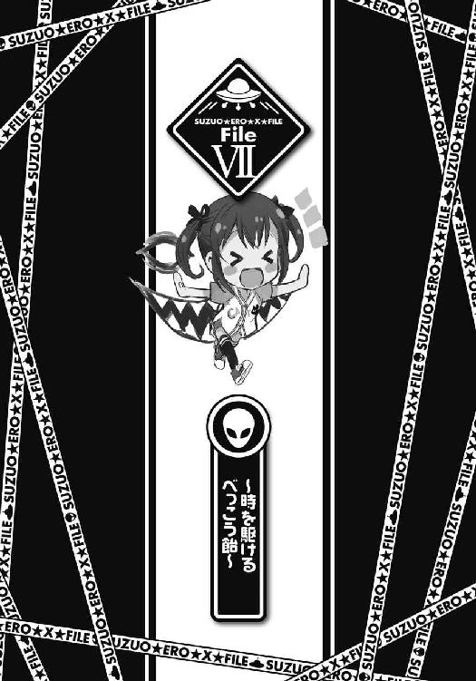

| SE-Xふぁいる シーズン2 斎条東高校「超常現象☆探求部」の秘密 (電撃文庫) | |
| 五十嵐 雄策 | |
| (2016) | |
本書（電子版）に掲載されているコンテンツ（ソフトウェア／プログラム／データ／情報を含む）の著作権およびその他の権利は、すべて株式会社ＫＡＤＯＫＡＷＡおよび正当な権利を有する第三者に帰属しています。
法律の定めがある場合または権利者の明示的な承諾がある場合を除き、これらのコンテンツを複製・転載、改変・編集、翻案・翻訳、放送・出版、公衆送信（送信可能化を含む）・再配信、販売・頒布、貸与等に使用することはできません。
『願い』。
辞書で調べてみると、そうなってほしいと望むこと、と書かれている。
願いというものは、世の中に数多く存在する。
それこそ人の数ほど、願いはあると思う。
頭が良くなりたい。お金が欲しい。異性にもてたい。健康な身体を手に入れたい。挙げていけば数限りがない。俺だって、叶うものなら叶えたい願いがたくさんある。
だけど。
その中の一つだけ叶えてもらえるとしたら、何を願うだろうか。
ノーベル賞を取るほどの頭脳が欲しい。
世界一の大金持ちになりたい。
ハリウッドのスーパースターのように異性を惹き付けたい。
不老長寿の身体を手に入れたい。
もちろんそういった大仰な願いもあるだろう。
だけどそれ以外の日常の中で感じている、些細な違和感や感覚のズレにこそ、願いの本質はあるような気もする。
少しだけぎこちない友達と仲良くなりたい、ちょっとだけ身長を伸ばしたい、明日のテストで赤点を取りたくない。そんな小さな願いの集合こそが、この世界の根幹を形作っている。そんな気もするんだよ。
「......」
とまあ、回りくどい上に前置きが長くなったが。
今回は願いの物語だ。
俺たち『超常現象☆探求部』の面子が、夏休みの間に遭遇する、ちょっとした願いと関連したいくつかの出来事。
それは夏休み前の『超常現象☆探求部』の部室から始まるのであって──
０
それは夏休みを目前に控えて、学校全体がどことなく落ち着かない雰囲気になり、あちこちで「なあなあ、もう夏休みの予定決まった？」「おれはこの夏こそ必ず大人になってみせる......！」「海いこうぜ海！ ナンパだー！」なんていう会話が繰り広げられ始める、ドリーミングでエキサイティングな七月のある日だった。
斎条東高校の高等部にある生物準備室。
『超常現象☆探求部』の部室でもあるそこでは、今日も次の調査対象である超常現象についての議論が喧々諤々と交わされていた。
「さて次の探求対象を決めたいと思うのだが......皆、何か探求してみたい超常現象はあるかね？」
「あ、は～い、部長。私はハワイに行きたいで～す♪」
「ハワイか......何かいい超常現象のネタはあったかな。『火山の女神ペレ』などか......？」
「んー、何でもいいけど、あたしは宇宙人関係のものがいいかなー。ＵＦＯ探索ツアーとか」
「え～、やっぱりハワイですよハワイ。オアフ島でパンケーキのフルーツ全部のせとか？」
みんながみんな、それぞれの意見を好き勝手に口にする。
そんな中。
「あのさ......座敷童ってのはダメかな？」
「え？」
そう提案してきたのは本郷麗奈だった。
今日もまた膝上短めのスカートを、派手な感じの装いでひらひらとさせている。
「ほら、座敷童だよ。昔話とかでも有名な。実はうちの親戚で旅館をやってる人がいて、そこの旅館に座敷童が出るっていう話なんだ。だから一晩くらい泊まらせてもらったらいいんじゃないかと思って──」
「ほう、座敷童かい！」
麗奈の言葉の終わりを待つ間もなくろーちゃんが食い付いた。
その顔の半分は占めようかという巨大な目をギラギラと怪しく輝かせると。
「座敷童......主に岩手県に伝えられる精霊的な存在であり、座敷または蔵に住む神と言われているな。家人に悪戯を働く、あるいは見た者には幸運が訪れる、家に富をもたらすなどの伝承があり、柳田國男の『遠野物語』や『石神問答』などでも知られている。見た目は赤面垂髪の五、六歳くらいの子供だというが、年恰好は住み着く家ごとに異なるという話もあり、下は三歳程度、上は十五歳程度の例もあるとか。髪はおかっぱ、またはざんぎり頭。性別は男女両方が見られ、男の子は絣か縞の黒っぽい着物を、女の子は赤いちゃんちゃんこや小袖、ときには振袖を着ているという。それが出るというのか、ふむふむ、興味深い......」
ひと息でそう言い切る。相変わらず詳しいな。
とはいえ座敷童の名は、ほとんどの人が一度くらいは聞いたことはあるだろう。
詳細についてはだいたい今ろーちゃんが説明した通り。出会った者や家に幸運をもたらすという子供の姿をした妖怪。妖怪の中では有名な方だと思う。岩手を中心とした東北地方が発祥の地とのことだから、やっぱり麗奈の親戚の旅館というのもその辺りのものなんだろうか。だとすると一泊旅行だとしてもなかなかの遠出というか移動距離になるよな。
「なあ、その旅館って、どこにあるんだ？」
なので麗奈に訊いてみたところ。
「えっと......確か伊豆だったかな」
「え？」
「だから、伊豆だよ。東伊豆の辺り」
「......」
伊豆って......これまた近場がきたな。
というか座敷童と言えば山深い田舎の古びた旅館に出る印象があるんだが、伊豆にそんな山があったっけか......？
俺のその疑問にろーちゃんが。
「いやいや一概にそうとは言えないよ。もちろん山は霊気が集まる場所ゆえにそれだけ超常現象も発生しやすくなる。だけど座敷童はあくまでも家に憑く妖怪であって、必ずしも山とセットというわけじゃない。それに伊豆と言っても天城などの深山もある。座敷童がいたとしても何ら不思議ではないよ。麗奈くんの言っている旅館があるのもその辺りなのだろう？」
そう補足をするものの。
「あ、いや、ええと、網代なんだけど......」
「あ、網代......？」
「うん。熱海とか伊東の近くの。何かまずかったかな......？」
「......」
網代って......確か思いっきり港町じゃなかったっけ？ 金目鯛の干物の名産の町としてテレビで紹介されていたのを見た覚えがある。なんか座敷童と最も縁遠い場所のような気がしてならないんだが......
「......ご、ごほん、まあ、座敷童にも色々いるということなのだろう。それもまた謎の一つ。謎が謎を呼んでこその超常現象だよ！」
ろーちゃんが強引にそう言い切る。ううむ、そういうものなんだろうか。
まあともあれ次の調査対象が座敷童であることに特に異論がある者もなく。
「では今回の『超常現象☆探求部』の活動は、伊豆における座敷童探索に決定したいと思う。みんなもそれでいいかい？」
「おう」「おっけーで～す♪」「うちはもちろん」「うんうん、伊豆かー。いいねー」
というわけで、伊豆の網代に座敷童を探求しにいくことになったのだった。
さて今さらになるが、俺が所属しているのは斎条東高校『超常現象☆探求部』である。
『超常現象☆探求部』というのは斎条東高校にある部活の一つで、超常現象を探求し、その謎に挑み、最終的に解決することを活動内容としている。
部員は部長であるろーちゃんこと白羽根鈴緒、俺、黒龍芽衣、本郷麗奈、碑文谷浅葱、の五人。白羽根さんと浅葱は俺のクラスメイトであり、芽衣と麗奈の二人は中等部の二年生である。
未知なる超常現象を求めて、『超常現象☆探求部』は今日も東奔西走する──
１
待ち合わせ場所は小田原駅だった。
夏休み第一週目の、多くの人で賑わう土曜日、朝九時。それぞれの家の位置関係からここで一度集合して、特急列車である『踊り子号』に乗って網代まで向かうのである。
「ん、みんな集まったみたいだな」
「は～い！」
「うちは十五分前から来てるし」
「ふふふ、みんなで三泊も泊まりで旅行するんだ。浅葱さん、楽しみだなー」
「......」
楽しそうな芽衣を筆頭に、皆が返事をする。
今回の参加者は芽衣、麗奈、浅葱、そしてろーちゃんこと白羽根さんの、『超常現象☆探求部』部員フルメンバーである。
出欠確認をした後に、駅弁と飲み物を買って『踊り子号』に乗り込む。
「わ～、すごいすご～い、サラマンダーよりもはや～い♪」
「こんな高そうな特急に乗ってうちら大丈夫なのかな......？」
「ん、大丈夫みたいだぞ。この間正式に部活に昇格したあかつきに、追加で部費が出てるみたいだ」
「そ、そっか、なら安心かも......」
「うーん、みんなで電車で移動っていいよねー。わくわくしてくるよー」
ゴールデンウィークの『地図から消された村』以来の遠出ということもあって、皆のテンションも上がり気味のようである。
そんな中。
「............」
ろーちゃんだけがやたらと静かだった。
いつもだったら超常現象の現場に向かうわけだから「座敷童に類するものは日本の各地にいて、徳島のアカシャグマや沖縄のキジムナーなども......なんたらかんたら」だとか「実は座敷童は宇宙人ではないかという説もあるのだよ。子どもの姿に見えるのはそういう生態の種族だからであって......うんたらかんたら」だとか訊かれなくとも色々解説してくるはずなのに。うーん、どうしたんだろうか。早くも夏バテとか......？
おまけに今回、ろーちゃんは麦わら帽子を深々と頭に被っている。電車の中だというのにそれを脱ごうともしない。おかげでただでさえでかい頭がさらにでかい麦わら帽子に覆われてほとんどどこぞのご当地キャラみたいになってるんだが。というか何でこんなもんを被ってるの？ 恥ずかしいの？ いやそれならそもそもろーちゃん仕様で来なければいい話だし......
と、その時だった。
キキイッ......！
カーブに差しかかったのか、電車がグラリと揺れた。
ちょうど網棚の上の荷物を取ろうとしていたのか、そこで立ち上がりかけていたろーちゃんがバランスを崩す。勢いあまって、その頭から麦わら帽子が床に滑り落ちた。
「ん、落ちたぞ」
「あ......」
「ほら、気を付けろって」
拾い上げて渡そうとろーちゃんの方を見る。
そこにはこの三ヶ月で見慣れた不気味悪いリトルグレイ面がニヤリと不敵な笑みを浮かべて......いなかった。
そこにあったのは......
「......は、恥ずかしいですわ、殿方に顔を見られてしまいました......」
「!!」
なんか、後頭部が出っ張ったフォルムをした老人のマスクだった。
ろ、ろーちゃんじゃない......!? というかこういうのを昔マンガで見たことがある。何だったけか。そう、確か妖怪のぬらりひょんがこんな姿形をしていて......
「だ、だれだお前は!?」
「え......？」
「ろ、ろーちゃんはどこに行った!? な、何でぬらりひょんがここにいるんだ......！」
思わずそう叫ぶと。
「......う、ううっ......」
「......え？」
返ってきたのは、泣き声だった。
「ひ、ひどいですわ......だ、だれだなんて......わ、わたくしだって、ろーちゃんと同じ白羽根鈴緒の中の超常現象の一つですのに......」
しくしくと、その外見からまったく似合わない弱々しい声で泣き始める。
え、ええと、何これ......？ どうしたらいいの......？
見た目ぬらりひょんが少女のようにさめざめと泣いているというシュールな光景にどう対応したらいいか分からなくなっていると。
「あーあ、泣かせちゃった」
浅葱がはーっとため息を吐いた。
「だめだよ。ぬーさんはこう見えてものすごく乙女なんだから。もっとガラス細工に触れるみたいに優しく接してあげなきゃ」
「ぬ、ぬーさん......？」
「そっ。ぬらりひょんのぬーさん。ろーちゃんの姉妹だよ。聞いてたでしょ？」
「......」
......あの、宝箱の中から出て来たやつか......。そういえばこんなぬらりひょんマスクもあったような気がする。とするとこのろーちゃんに輪をかけて面妖な妖怪総大将が、何人かいるというろーちゃんの姉妹の一人であるということであり......
「......ぐすっ、わたくし、ぬーさんと申します。姉妹の中では次女にあたり、主に妖怪に関する超常現象の解明を担当しています。対象となる超常現象が座敷童ということで、今回はろーちゃんに代わりわたくしが参りました。どうぞよろしくお願いいたしますわ」
懐から取りだしたハンカチ（シルク）で涙を拭いながらそう言ってきた。
何だか、頭が痛くなってきた......
小田原から網代までは、電車で三十分ほどだった。
初対面（？）となるぬーさんにみんなで「ねえねえ、ぬーさんはぬらりひょんなんだよね」「はい、そうですわ」「......何でぬらりひょんなんだ？」「それはぬらりひょんこそが妖怪の総大将だからです」「こ、これってマスクなんだよな？ 質感がすごいリアルだな......」「マスクといいますか、一つの生命体ですわ。白羽根鈴緒の中の超常現象の一つの発露です」「そ、そうなのか......」などと色々と質問をしながら話しかけていると、あっという間に着いてしまった。
「へ～、ここが網代か～。はじめて来たよ。なんか潮のにおいがする」
網代駅はいかにも海辺のローカル駅という感じだった。
全体的に人は少なめで、自動改札機はなく簡易ＩＣ改札のみ。駅を出てすぐのロータリーの対面には『あじろ温泉』と書かれた大きなゲートがあり、そのすぐそばにある土産物屋では魚の干物が売られていた。
「ええと、麗奈の親戚の旅館ってのはどこにあるんだ？」
「あ、うん、確か迎えが来てくれてるはずなんだよ。うちの従姉妹で......ん、あれかな？ うーん、たぶんあれだと思う。おーい、こっちだこっち！」
麗奈が大声で手を振る。
その先には......小学生くらいの、女子の姿があった。
「麗奈おねえちゃん！」
手を振り返しながら駆け寄ってくる。
「ひさしぶりだね、麗奈おねえちゃん！」
「ああ。ずいぶん大きくなったな。全然分からなかったよ。もう小学四年生だっけ？」
「うん、そうだよ♪」
麗奈と手を取り合って嬉しそうに声を上げる。
あの子が麗奈の従姉妹なのだろうか。
「紹介するよ。この子がうちの従姉妹で......ええと、」
「蝶子だよ。本郷蝶子です。よろしくお願いしま～す♪」
ぺこりと頭を下げながらそう挨拶してくる。
見た目は普通の小学生女子って感じだ。服装も純朴な感じだし、ギャルもどきの従姉妹のようにはならないで、このまま健やかに育ってほしいところだね。
互いに自己紹介を終えた後、蝶子ちゃんに案内されて、旅館へと歩いて行く。
麗奈の親戚の旅館──『翠山荘』は、網代駅から歩いてすぐのところにあった。
海からは少し離れた高台で、裏手に小さな山がある立地である。
事前に簡単に調べたところによると、確かにこの『翠山荘』は座敷童が出るということで名が知られているようだった。何でもこの旅館のとある部屋に泊まると、その後出世できたり幸運に巡り会うことができたりするということらしい。リピーターも多くいるとか。ていうかそんな風に座敷童が出ることを売りにしている旅館があるんだな。初めて知った。
「日本には座敷童が現れるということを掲げている旅館はいくつかありますわ。最も有名なところでは東北にある『菅原別館』『タガマヤ村』『緑風荘』『わらべ』の四つの旅館が挙げられますが、その他にもそういった旅館は各地にあります」
日傘（花柄）をおしとやかに畳みながらぬーさんが言った。
「座敷童は見た者に幸運をもたらし、その家に富を運ぶと言われています。さらに座敷童は家に憑く妖怪なので、こうした旅館との親和性も高いのでしょう。なのでそうしたことを看板に掲げる旅館があっても不思議ではないのかもしれませんわね」
「なるほど......」
すらすらとそう説明してきてくれる。
うーん、ぬーさんもやっぱりこうした超常現象絡みのことには詳しいのか。というか姉妹の中での妖怪担当と言っていたし、超常現象の中でも特に妖怪絡みのことに特化されたのがこのぬーさんなのかもしれないな（見かけ的に）。
旅館の中に入ると、迎えてくれたのは蝶子ちゃんの両親だった。
麗奈の叔父と叔母にあたる人物で、この『翠山荘』の主人と女将とのことだった。
「いらっしゃいませ、ようこそ『翠山荘』へ。麗奈ちゃんも大きくなったね」
「ゆっくりしていってくださいね。蝶子、みなさんを『幸運の間』に案内してさしあげなさい」
「はーい」
元気よく手を上げた蝶子ちゃんに先導されて旅館の奥へと進んでいく。
「ここが座敷童が出るっていう部屋だよ」
通された二十畳ほどの和室には、たくさんのぬいぐるみや人形、ゲーム機などのおもちゃが置かれていた。
「座敷童はその姿の通り子どもの妖怪と言われています。そのために座敷童が出ると言われている場所では、こうしておもちゃを置いておくことが多いのですわ」
「へえ......」
ぬーさんがそう説明してきてくれる。
「ていうかきれいな部屋だよね。民宿っていうから、もう少し古めかしいのを想像してたんだけどなー」
浅葱のその言葉に。
「あ、実はここ、建て替えたばっかりなんだよ」
「え、そうなの？」
麗奈がうなずく。
「うん、ちょっと前に火事で全焼しちゃったみたいでさ。さいわい怪我人とかは出なかったし、保険にも入ってたから大事にはならなかったみたいなんだけど......」
「へー、大変だったんだねー」
そんなことがあったのか。
言われてみれば壁とか柱とかは真新しい感じである。どことなく新築の家の香りがするような気もした。
「それじゃ麗奈おねえちゃんたち、夕飯までゆっくりしててね」
そう言って蝶子ちゃんは去っていった。
旅館の娘らしくきちんと三つ指を突いて挨拶していくのを忘れなかった。
ううん、よくできた子だね。
＊
友だちが──ほしかった。
いっしょに遊んで、笑いあえる友だちが、ほしかった。
毎日旅館の手伝いで手いっぱいで、遊ぶヒマなんてない。
朝から晩まで、おおいそがしだ。
でもお父さんもお母さんもがんばっているのを知っていたから、ワガママは言えない。
他に人はいないのだし、どんなに遊びたくとも、私が手伝いをするしかない。
だけど頭ではわかっていても......心はついていかなかった。
友だちがほしい。旅館の手伝いなんかやめてしまって、一日中自由に遊びたい。その願いは、日増しにどんどんと大きくなっていった。
そんな時だった。
私は......彼女と出会った。
２
夕飯までは少し時間があったので、宿の周りを少し散歩してみることにした。
浅葱たちは今、部屋にあった備え付けの露天風呂に入っている。
ちなみに今回、座敷童が出る部屋は一つしかないということで、俺も浅葱たちと同じ部屋だった。
さすがに三泊もすることだし、その間ずっと同じ部屋ってのは俺としては気が引けたわけだったのだが、浅葱たちは、
『ん？ あたしは別に全然いいけど？ ていうかせっかく旅行に来たんだから映一朗も同じ部屋の方が楽しいし♪』
『わたしも浅葱先輩と同意見ですよ～。その方が先輩を二十四時間監視できますし、むしろ同じ部屋がいいです♪』
『う、うちは、その......みんながいいって言うなら......まあ、モルダ先輩だし......』
『と、殿方といっしょに三日も過ごすのですか......？ ど、どういたしましょう、朝晩のお肌の手入れを怠らないようにしませんと......』
とのことで、問題なく認められることになった。ちなみにくねくねと身体を動かしながら一番恥ずかしがっていたのがぬーさん（見た目いかついぬらりひょん）だったことについては......まあ、うん、ノーコメントで。
宿の周りの景色は、都会とは全然違ったものだった。
裏が山になっていることから辺り一面自然に囲まれていて、虫の声なんかが聞こえてくる。生い茂った草木から立ち上る草いきれ。旅館の名前さながらの緑溢れる風景である。確かにこの森の中に座敷童が住んでいると言われれば納得してしまいそうな雰囲気だった。
気持ちのいい空気を胸に吸い込みながら適当に歩いていると、
「......そこは......裏側からつんでいって......」
「......？」
と、声が聞こえた。
女の子の声だった。だれかいるのか？ こんな時間にこんな場所に？ はっ、まさかさっそく座敷童が......？
早くも『Ｍシステム』が発動したのかとそこはかとなく警戒しながら恐る恐る声のした方に向かってみるとそこにいたのは。
「──って、蝶子ちゃんか」
「あ」
大きな木の陰に座り込んで、こっちを見上げる蝶子ちゃんだった。その隣には同じくらいの年頃の小さな女の子もいる。友達かな。
蝶子ちゃんは俺の顔を見ると少しだけ慌てたように口を開いた。
「あ、え、ええと、麗奈おねえちゃんのおともだちで......たしか、モルダくん！」
「......護田な」
心の中でため息を吐きながらいちおう訂正する。
実は自己紹介の時にまた嚼んでしまって、それ以来蝶子ちゃん相手でもモルダで定着してしまったのだ。もういいけどさ......
「えっと、モルダくん、こんなところで何してるの？」
「ん、ちょっと散歩をしてたんだ。蝶子ちゃんは？」
「わたしは......えっと、友だちと遊んでたんだよ」
「友達？」
「あ、うん、このこはわたしの友達で、加奈ちゃんっていうんだ」
女の子が蝶子ちゃんの背中からおずおずと顔を出す。
「加奈ちゃんか。よろしく」
「......よ、よろしく......」
おかっぱの頭を小さく震わせてうなずく。ううん、ちょっと人見知りな子なのかな。俺の顔が怖いからだとは......思いたく、ない。
少しでも警戒心を解こうとしゃがんで目線を合わせようとして。
「あ、モルダくんあぶない！」
「え？」
ガンッ！
顔面に衝撃がはしった。
薄暗くてよく見えなかったが、横から張り出していた木の枝にしこたま顔をぶつけてしまったのだった。
「だ、だいじょうぶ、モルダくん！」
「......あ、ああ......」
かなり痛い。
おまけにぶつけた拍子に粘膜が傷ついたのか、鼻血が出ていた。よくよく鼻血には縁があるね......
「あはは、モルダくん、意外とドジなんだね～」
「......くす」
みっともないところを見せてしまったものの、加奈ちゃんも小さく笑っていた。まあ......それならいいか。
「で、二人して何をやってたんだ？ 花札とかか？」
「え、なにそれ？ ゲームだよ。マイクラ」
「......」
現代っこだな......
ちなみにマイクラというのは、様々な素材となるブロックが溢れる世界で、建物を建てたりアイテムをクラフトしたりして、自分の思い通りの世界を組み上げていくゲームのことである。
携帯ゲーム機でも遊ぶことができ、今どきの小中学生に大人気だとか。
「モルダくんはやらないの、マイクラ？」
「え、いや少しくらいなら」
「じゃあいっしょにやろ。わたし、あんまうまくないの。今ちょうど加奈ちゃんとお城をつくってたところなんだけど、うまく積み上げられなくて困ってたんだよ～」
「ん、ああ」
それからしばらく三人でゲームをした。
ちなみに自分では上手くないと言っていたものの、蝶子ちゃんも加奈ちゃんもかなりの腕前で、俺の出る幕はほとんどなかった。く、歳上の面目が......
「ねえねえモルダくん、ここどうしたらいいと思うかな？」
「え？ あー、ええとだな、こう、ふわっとした感じで普通に積んでいけばいいんじゃ......」
「......ちがうと思う。ここは足場をくんでから順番につみあげていった方が、いい、かも......」
「あ、そか。さすが加奈ちゃん」
「......」
......俺、本当にいらないんじゃ......
「そんなことないよ～。いてくれるだけで場が和むっていうか、なんていうか、マスコットみたいな感じ？」
「......うん。いやし担当」
「......」
身もフタもないな......
まあ、二人が楽しんでくれてるみたいだからいいんだけどさ......
そんなことをしている内に、やがて日は西の空へと傾き、辺りが暗くなり始めた。
「んじゃ、そろそろ時間も遅くなってきたし、戻るか」
「あ、そだね」
「......たのしかった」
最後の方には加奈ちゃんもそれなりに打ち解けてくれたみたいだった。
小さく笑みを浮かべる加奈ちゃんに手を振って別れ。
蝶子ちゃんと二人で宿に戻ろうとして。
「あ、あのね、モルダくん......」
と、蝶子ちゃんがこっちを気にしたように口を開いた。
「護田な......」
「あのさモルダくん、ちょっと......お願いがあるんだけど、いいかな？」
「お願い？」
蝶子ちゃんがこくりとうなずく。
「う、うん。あのさ、実は加奈ちゃんと遊んでたこと......麗奈おねえちゃんたちにはないしょにしておいてほしいの」
「え？」
「あ、え、えっとほら、加奈ちゃんの家、ちょっときびしいの。だから、こうやって遊んでることが分かったらおこられちゃうかもしれなくて......」
「うーん」
何か訳ありの家庭なんだろうか。
そういえばどことなく不思議な雰囲気の子だった。俺には事情はよく分からないので、蝶子ちゃんがそうしてほしいのなら言う通りにしておこう。
俺はうなずき返して。
「ん、分かった。秘密にしとく」
「わ、ありがとう、モルダおにいちゃん！ ちょっと顔がこわいけど、いい人なんだね！」
そう言ってぎゅっと抱きついてくる。
やっぱり俺の顔は怖いのか......
「あら、お帰りなさいませ、モルダさん」
宿に戻ると、湯上がりの浴衣姿でほこほこのぬーさんが迎えてくれた。
その仕草は上品で洗練されていて、妙に艶っぽい。いや顔はぬらりひょんなんだけどさ。
「とてもいいお湯でしたわよ。モルダさんもお入りになったらよろしいのに」
「ん、ああ、そうだな」
「みんなで入れて楽しかったよ？ 先輩もいっしょに入ればよかったのに～」
芽衣がそんなことを言ってくる。
「そ、そんな......殿方といっしょに湯船に浸かるだなんて、モ、モルダさんといえども、は、恥ずかしいですわ......」
「そ、そうだよ！ 先輩だって、その、こう見えても男なんだから......っ......」
「ん、あたしは別にそれでもよかったよ？ いまさらそれくらい恥ずかしがるような仲じゃないし（ちらっ）」
浅葱が浴衣の隙間からちらりと太股とその奥を覗かせてくる。
「ちょ、あ、浅葱！」
「えー、これくらいいいじゃん。へるもんじゃないんだし。サービスサービス。ほら、ぬーさんも♪」
「い、いやん......」
浅葱に浴衣の胸元を広げられそうになって可愛らしい少女のような声を上げる。いや顔はぬらりひょんなんだけどね......
「そだよそだよ～、うちのおふろは大きくて自慢なんだから、みんなで入ってもだいじょうぶだよ。あ、モルダくん、だったらわたしがいっしょに入って背中ながしてあげよっか～？」
蝶子ちゃんが腕に抱きつきながらそう言ってくる。
「......ちょっと先輩、いつの間に蝶子と仲良くなったんだよ」
それを見た麗奈がなぜか少し不満そうに言った。
「え？ いやついさっきかな」
「そうだよ。いっしょに愛のお城をつくったんだよね～」
「！」
ちょ、その言い方は色々と問題が......
「ど、どういうことだよ先輩！ あ、愛の巣ってまさか......」
「そ、そうですよ～！ この芽衣ちゃんというものがありながら、幼女に手を出すなんて！」
「モルダさんは成熟した超常現象好きな大人の女性が好みではなかったのですか......？」
「映一朗の趣味に口を出すつもりはないんだけど......ちょっとその年齢は問題なんじゃないかなー」
「いやだから違う......」
麗奈や芽衣だけではなく、ぬーさんや浅葱にまで責められる。
いやロリコンは犯罪だってことを身に染みて思い知らされた瞬間だったね......
そんなこんなで誤解を説明している内に、夕食になった。
金目鯛の煮付けや鰺の塩焼きなどの伊豆の海の幸に舌鼓を打つ。その夕食の席でも、やっぱりぬーさんの食事作法は（見かけによらず）優雅で見事だった。流れるような箸さばきで食べづらい魚を骨が見えるくらいにきれいに食べている。ぬらりひょんなのに。
「なあ浅葱。白羽根さんってもしかしてけっこういいところのお嬢様だったりするのか？」
「え？」
「なんかぬーさん、やけに行儀作法がしっかりしてるっていうかさ。ぬーさんの本体は白羽根さんのわけだろ。てことはもしかしたら白羽根さんがなんかそういう英才教育みたいなのを受けてるのかと思ってさ」
「うーん......それはちょっと今はノーコメント、かな」
「え？」
「まあ......あの子も色々あるんだよ。そのへんのことはまたおいおい、ね」
「......？」
何だろうね。
まさかとは思うけどマフィアの一人娘......とかじゃないだろうな。白羽根さんの場合、なんか何でもありそうで怖い。
とまあ、そんなそこはかとない疑問を残しつつ夕飯は終わった。
歯磨きや着替えや枕投げなどの就寝前の支度も終えて──いよいよ座敷童が出てくるという時間帯になる。
「いよいよ座敷童とのご対面ですわね......」
電気を消した部屋に布団を敷いて、寝たふりをしながら座敷童が出てくるのをみんなで待つことにする。
「いやまだ出ると決まったわけじゃ......」
「いいえ、出ますわ。わたくしの膝の古傷がうずいていますから、間違いありません」
そんな低気圧じゃないんだから......
「ふふ、座敷童、楽しみだな～。会えたら、お願いしたいこともあるし」
「見たら幸運が舞いこむっていうんなら、うちも少しは幸せになれるのかな......？ いいこと、あるといいな......」
「幸運を運ぶ存在かー......お父さんの日記に書いてあった、チョウピラコ星人みたいなものなのかな？」
芽衣たちもそれぞれ期待に満ちた声でそんなことを口にしていた。
だけど十分十五分経ってもそれらしい兆候は現れない。
「うーん、出てこないね、座敷童」
「お、おかしいな......蝶子の話だとほぼ毎日出るってことなんだけど......」
やっぱり初日からそう簡単には出てきてくれないってことなんだろうか。
やがて一時間ほどが経ち、昼間からの疲れも出てきたのか、あちこちからみんなの寝息が聞こえ始めてきた。
ううん、今日はハズレだったのかな。仏滅だし、座敷童にも気が乗らない日とかがあるのかもしれない。
まあまだあと二日あるし何とかなるだろう......と思い、タオルケットを頭から被ろうとした時のことだった。
ミシリ......
廊下の方から、足音のようなものが聞こえてきたような気がした。
「......ふっふっふ、来ましたわね」
「ぬーさん」
隣の布団で、起きていたのかぬーさんが不敵な声を上げた。
「この時間に迫り来る謎の足音......これはもう座敷童に間違いありませんわ。──超常現象・招・来！」
「......」
ああ、うん、こういうところは完全にろーちゃんの姉妹だな......
「さ、モルダさんはあちらから回り込んでください。わたくしはこちらで待ち伏せます」
「え、どうするんだ？」
「もちろん......捕獲するのですわ！」
「ええー」
いきなり過激なことを言い出したよ！
「だってそうしなければ超常現象の正体が分からないではないですか。実際に超常現象と触れ合って肌で感じてこその『超常現象☆探求部』なのです！ 抱きしめて、頰ずりをして、お互いの首筋を嚙み合いませんと！」
ムツゴロウさんか！
というかろーちゃんは超常現象をその目で見られさえすればよくてそういったことにはアバウトだったような気がする。この辺はろーちゃんとぬーさんとで、だいぶスタンスの違いがあるらしい。
「さあ、迅速にやりますわよ、モルダさん。獲物が逃げてしまいますわ」
「......」
......仕方ない。
どうせ俺がやらなくとも一人でやろうとするだろう。運動神経が壊滅的に悪いぬーさん（というか白羽根さん）に任せたら、それこそ骨折とかをしかねない。
布団から起き上がり、廊下へと意識を向ける。
座敷童は障子の向こうからこちらの様子を窺っているようだった。小さな女の子のシルエットが障子紙を通してぼんやりと見える。
（一、二の三で障子を開けてくださいな。相手が動揺したところを一気に飛びかかりますわよ）
（......了解）
小声でそう言い合って、俺は障子の側へと移動した。
座敷童（？）はまだ外からこちらの様子を窺っているようだ。
それを確認して、ぬーさんの顔を見てうなずき合うと。
（一、二の......三！）
俺は一気に障子を開いた。
バッ......！
「......っ！」
いきなり障子が開いたのが予想外だったのか、座敷童（？）がつんのめって前のめりに部屋の中に入ってくる。
「今ですわ、モルダさん！」
「お、おう！」
二人していっせいに座敷童（？）に飛びかかった。
伝わってくる確かな手応え。じたばたと暴れながら、腕の中の座敷童（？）が声を上げた。
「きゃっ......！」
「え......？」
それは聞き覚えのある声だった。
聞き覚えというか、ほんの数時間前まで聞いていた声。
「え、こ、これって......」
「どういうことですの......？」
ぬーさんと顔を見合わせる。
「うう～......」
月明かりに照らされて浮かびあがる座敷童（？）のシルエット。
それは──赤い着物を着た、蝶子ちゃんだった。
「これって......どういうことなんだよ！」
「そ、それは、その......」
「その、じゃ分からないだろ！ うちにも分かるようにちゃんと説明しろって」
言葉を濁す蝶子ちゃんに、麗奈が詰め寄る。
「ほら麗奈、ちょっと落ち着こうよ。そんなに威嚇したら蝶子ちゃんも話せないんじゃないかな～」
「べ、別にうちは威嚇とかしてないし」
「麗奈はそう思ってなくても周りはそうじゃないんだよ。麗奈はギャルっぽくて雰囲気がヤンキー風味なんだから」
「ヤ、ヤンキー......？ うち、ヤンキーなのか......？」
愕然とした表情でその場に座り込む麗奈をスルーして、芽衣が続ける。
「ねえ、それで蝶子ちゃん。どうして蝶子ちゃんが座敷童のかっこうをしてたの？ 何か理由があったんだよね？」
「そ、それは......」
ためらいながらも何かを口にしようとする。
その時だった。
「それについては私たちが説明します......」
「叔父さん、叔母さん！」
現れたのは麗奈の叔父さんと叔母さんだった。
神妙な顔で部屋へと入ってくると、深々と頭を下げて。
「始まりは、あの火事からだったんです......」
ゆっくりと、語り始めたのだった。
３
翌朝。
俺たちは朝食を済ませた後、旅館の裏手にある山を歩き回っていた。
「う～ん、ねえねえ先輩、ここの穴の中とかどうかな？」
「いやタヌキとかじゃないんだから、そんなとこにはいないだろ」
「そっかあ......」
「ねえ、映一朗、こっちの方からすっごくいい匂いがするんだけど、これって座敷童の匂い？」
「それはマイタケの匂いだろ......」
「え？ あ、言われてみればそうだ」
「こんな山の中でマイタケの匂いを探り当てるのもすごいと思うがな......」
野生動物並の嗅覚である。
これは別にタヌキ狩りをしたり山菜狩りをしようとしているわけではなく。
目的は......座敷童の捜索である。
『翠山荘』に出ると言われていた、座敷童の行方を追っているのだ。
「なあなあ、座敷童って子どもの妖怪なんだろ？ だったらお菓子とかおもちゃとかで罠を作っておびき寄せれば出て来るんじゃないかな？」
「だからそれは野生動物の捕まえ方だって......」
「そ、そうか......」
「まあおもちゃで釣るっていうのは悪くないような気もするけどな」
「そ、そうか？ う、うちも少しは役に立てたかな、えへへ」
どうしてそんなことをしているのかというと、それは昨晩の麗奈の叔父さん叔母さんの話に遡る──
「座敷童がいなくなった？」
「はい......」
麗奈の叔父さんの口から出てきた言葉が、それだった。
「実は火事でかつての建物が焼けてしまって以来、一度も座敷童を見ていないのです。それどころかその気配すら感じられなくなってしまいました。火事が起こるまでは、確かに何かがいたというのに......」
「......」
二人の話によると、全てが変わってしまったきっかけは半年前に起きた火事にあるとのことだった。
それまでは座敷童そのものの姿こそは見えないものの、夜中に足音がするだとか部屋に置かれたおもちゃが勝手に動き出すだとかの不思議な現象があったのだとか。お客さんの中には部屋の外を走り回る小さな女の子の姿を見たという者もいた。だけど火事による建物の消失・建て替え以来、そうした現象はぱたりと止んでしまったのだという。
「だからわたしが提案したんだよ、座敷童がいなくなっちゃったなら、わたしが座敷童のふりをすればいいって！ だからおとうさんとおかあさんは悪くないの。悪いのはわたしで......」
「蝶子、そんなことはない。私たちがそれを認めてしまっていたのだから、やっぱり責任は私たちにあるんだよ。そういうものなんだ」
「で、でも......」
泣きそうになる蝶子ちゃんを叔父さん叔母さんたちがなだめる。
うーん、蝶子ちゃんの気持ちも分かるといえば分かるんだけどな......
「......事情は分かりましたわ」
と、それまで黙っていたぬーさんが静かにそう口にした。
「あなた方の仰ることは承知いたしました。半年前に火事が起こる前には確かに座敷童は存在していた。ですが今はそれがどこか行方知れずになっていると。そういうわけですわね？ なるほど、確かにここにはかつて座敷童が住んでいたようですね。でしたら......やることは一つでしょう」
「？」
そこでぬーさんが一度言葉を切る。
あ、なんかイヤな予感が......
「決まっています......わたくしたちで、座敷童を捜してみせますわ！」
「......」
力強くそう宣言するぬーさん。
......ああ、やっぱり......
叔父さん叔母さんたちもその言葉に少しの間どう対応していいか計りかねているようだった。
だけどすぐにハッと顔を上げて。
「そ、それは、もちろんそうしてくださるのだというのならば、それ以上のことはありませんが......」
とはいえその顔に戸惑いの表情は浮かんだままだった。
その返答にぬーさんは満足そうにうなずいて。
「でしたら決まりですわね。後はわたくしたちにお任せくださいませ。必ず良い結果をもたらしてみせますわ。それでは......これより『超常現象☆探求部』は総力を上げて座敷童を探索、発見、捕獲いたします！」
ビッ！ と力強く俺たちを指さしたのだった。
──というわけで、『超常現象☆探求部』で座敷童探索をすることとなったのである。
いやまあ蝶子ちゃんたちが困っているというのなら力になりたいとは思うけど、はたして座敷童なんてもんがそんな簡単に見つかるものなのかね......？
心の中で首を捻りながら、山の奥へと踏み入っていく。
この山は件の座敷童の目撃情報もあり、加えてここには座敷童を祀った祠があるということから、捜すならここだろうということになったのだ。
「ううん......見付かりませんわね......」
「座敷童ちゃ～ん、どこ～？」
「うーん、見付からないもんだな......。ん、大丈夫か、蝶子？ 何だか顔色が悪くないか......？」
「......え？ あ、う、うん、へいきだよ、麗奈おねえちゃん。ちょっと寝不足なだけだから」
「そっか......無理はしないようにな」
「くんくん......この匂いは座敷童のじゃないのかなー？」
道すがらも探索を続けながら進んでいき、やがてその場所へと辿り着いた。
「ここが......祠か」
木々がぽっかりと空いた空間に、それはあった。
深い緑の中に鎮座している小さな木製の祠。この鼻血が出てきそうな感じ。確かにここには何らかの超常現象の残り香のようなものが感じられた。
「それでは、手分けをして捜しましょう。わたくしは祠の辺りを、モルダさんと浅葱さんは森の方を、芽衣さんと麗奈さんと蝶子さんは山道の方をお願いいたします」
「おう」
「ん、分かったよ」
「らじゃりました！」
「うちに任せといて」
「......」
散り散りになって辺りを捜していく。
俺と浅葱の担当は森の周辺だ。しかし座敷童は普段どんなところに生息しているのかね。木の上とか......？
近くにあった大きな木の上を捜したり、幹の穴を覗き込んだりしていると。
「......モルダ、おにいちゃん......？」
「ん？」
ふと、そんな声が聞こえた。
木々の葉擦れに溶けてしまいそうなか細い声。
振り返ってみると......そこには俺のズボンの裾を引っ張りながらちょこんとこちらを見上げる加奈ちゃんの姿があった。
「加奈ちゃん」
こんなところでどうしたんだろうか。蝶子ちゃんに会いに来て迷ったとかか？
「......なにをさがしているの？」
「ああ、うん、座敷童をちょっとね」
「......ざしき、わらし......」
その言葉に加奈ちゃんの表情が曇った。
「ああ、ええとね、蝶子ちゃんの家に住んでいた、何ていうか、友達......なんだ。だけど今、行方不明らしくて......」
「............」
何かを考え込むかのように顔をうつむかせる。
と、浅葱がこっちに気づいて声をかけてきた。
「ん、映一朗、その子どしたの？」
「ああ、ちょっと──」
「誘拐？」
「違う！」
ちょっと誘拐って、どんだけスナック感覚だ！
「......この子は加奈ちゃんっていって、蝶子ちゃんの友達だよ。ちょっと前に知り合ったんだ」
「あ、そなんだ。誘拐犯じゃなくて」
「......」
どうしても俺を幼女誘拐犯にしたいのか......
「あはは、ごめんごめん、冗談だよ」
「......ったく」
「ごめんって。あ、でもさその子──」
と、その時だった。
「先輩、部長、あれ！」
「？」
芽衣が声を上げていた。何かあったのか？
「どうしたんだ？」
近づいて尋ねてみると、芽衣は顔色を変えて。
「あ、あそこ！ あそこの木の陰に、着物の裾みたいなのが見えたの！」
森の奥を指さしながらそう俺の腕をぎゅっと握ってくる。
聞いた話では座敷童は着物を着ているらしい。ということは、まさか......
ぬーさんも同じことを思ったのか。
「行ってみますわよ、モルダさん！」
「おう」
率先して駆け出す。が、足下が腐葉土なため足を取られてうまく進めないようだ。さすが運動神経三十点......
じたばたとしている割には進まないぬーさんはひとまず放っておき、森の中へ入っていくと、確かに木々の隙間から赤い布地のようなものがチラリと見えた。
座敷童は着物の中でも赤を好んで身に着けることが多いという。ということは......
「......と、とうとう出たのですわね......は、はあ......はあ......ちょ、超常現象・招・来......！」
ようやく追いついてきたぬーさんが、陸に打ち上げられたマグロみたいにはあはあしながらそう叫ぶ。
その視線の先にあったのは──
「なあ、いいだろ？ 例のアレ、一回やってみたかったんだよ」
「で、でも、旅館で借りた浴衣が汚れちゃう......」
「そんなもん、洗って返せばいいって。ほらいくぞ。それ......っ！」
「あ、やっ......あ～れ～」
「ほらほら、よく回るな。ほんとはお前もやりたかったんだろ？」
「そ、そんな......お、おやめください、お代官さま......」
「あ......やっ、こ、こんなところで......だ、だめだって......っ......」
「いやいや言いながらも身体は正直だな。もうこんなになってるぞ」
「そ、そんなこと言わないで......お、お代官さまぁ......」
......そんな、エロ代官とエロ町娘だった。
エロ町娘の帯を引っ張ってさんざん回転させた挙げ句、浴衣の帯を全て巻き取ると、その、おっぱじめはじめる。
「............」
......ああ、うん。
......今回も『ＳＥ─Ｘファイル』が絶好調だね。
心の底から疲れた気分でそうため息を吐く。
ちなみに『ＳＥ─Ｘファイル』というのは、ぬーさんの本体（？）である白羽根さんが標準装備している特性である。『鈴緒・エロ・Ｘファイル』の略で、それはひとたび発動すると超常現象の代わりにエロ現象を誘引してしまうというものであって......
「え、ええと、あれってどうなってるんだ......？ 女の人を軸にして帯が回されていて......って、蝶子！ み、見ちゃだめだよ！」
「は、はわわわわわわわ......っ......」
「は、肌色が......肌色がくるくるコマみたいに回ってるよぉ......きゅう......」
「はー、これが日本古来から続く様式美かー。す、すごいなー......」
麗奈たちはもうほとんど錯乱状態である。
はっ、そういえばぬーさんは......
さっきから反応がない。
ろーちゃんはこういったエロ現象に直面すると、茹でたオマール海老のように真っ赤になって機能停止していたが、ぬーさんも同じなんだろうか。
チラリと隣を見てみると。
「............」
返事がない。ただの屍のようだ......ってわけではなく。
「気を失ってる......」
いかめしいぬらりひょん面で真っ直ぐに前を見据えたまま、仁王立ちで失神していた。
何ていうか外見と相まって、即身仏みたいな感じだね......
その後も探索は続けられたが、座敷童は発見できなかった。
見つかるのは相変わらず誘蛾灯に引き寄せられる小虫のごとく出現するエロの化身だけ。どこもかしこも肌色で救いがない。時間も遅くなってきたということで、その日の探索は打ち切りとなった。
その帰り道。
「座敷童......みつからなくてもいいんじゃないかな」
「蝶子ちゃん？」
歩いていた蝶子ちゃんが、ぽつりと言った。
「ほ、ほら、みんなわたしのことを本物の座敷童だと思ってるんだから、わたしがずっと座敷童のふりをしてればいいんだし。座敷童も、もうちょっとの間は放っておいてほしいって思ってるんじゃないかな......」
「それは......」
それは違うんじゃないか......と言いかけて。
「そういうわけにはいきませんわ」
「ぬーさん」
ぬーさんがきっぱりとした口調でそう言った。
「確かに気付かれなければいいと思われるかもしれません。蝶子さんが座敷童のフリを続けていれば、現在の安穏は続くことでしょう。ですがそれは周りの人たちを欺き......ひいては蝶子さん自身の心を偽るということでもあります。急場しのぎとしてはいいかもしれません。でも自身の心を偽る行為は、目に見えない痛みのない傷となっていつまでも残ります。それをずっと続けていくということはできませんわ」
「自身の心を偽る行為......目に見えない痛みのない傷......」
蝶子ちゃんが自分の胸に手を当てる。
おお、顔に似合わずいいことを言ってくれるな......と思いきや。
「それに......それではいつまで経っても本物の座敷童が出て来てくれないではありませんか。座敷童を捕獲してこの手で抱きしめて頰ずりをするという、わたくしの目的が達成されませんわ！」
力強く言い放つ。
そっちが本命か。
はあ......ぬーさんはどこまでいってもぬーさんだね。
翌日とその次の日も丸一日かけて探索したものの、座敷童は見つからなかった。
『翠山荘』に来てから今日で三日目。予定では三泊四日の滞在予定だから、ここにいられるのもあと一日である。明日の帰る時間までに見つからなければ、残念だが今回の探求は失敗に終わることになる。
「ふう......」
風呂上がりに旅館の周りを散歩しながら、大きく息を吐く。
座敷童の気配がないわけではなかった。
山のあちこちを歩いていて、座敷童が出そうな予兆を感じる場所は何カ所かあった。それどころかところどころで鼻血が出ることもあった。だけどいまひとつ決定打に欠けるというか......
「......」
それに気になっていることがもう一つ。
何だか蝶子ちゃんの様子がおかしいように思えるんだよ。
座敷童探索の合間を見て、加奈ちゃんを交えて三人で何度か遊んだりもしていたのだが、その途中で何だか顔色が悪いというか、明らかに体調がしんどそうに見えることがあった。存在感が希薄になってしまったというか。
声をかけてみても「え、そ、そんなことないよ～。おにいちゃん、気にしすぎじゃない？」と言って取り合ってくれない。体調が良くないのか、それとも座敷童のフリをしていたことに罪悪感を覚えているのだろうか。でもそれはもうすんだことだし......
それ以外の場面ではいつも通りの蝶子ちゃんで、「ふふふ、楽しいなあ......加奈ちゃんと、わたしと、モルダおにいちゃん。こんなに胸がおどるのって、はじめて。おにいちゃん、帰らなきゃいいのになあ......」と、本当に楽しそうに見えただけに、何だか余計にそれが気にかかった。何か大事なことを見落としている感じというか......
胸に引っかかるものを感じながら足を動かしていると、近くで物音がした。
「？」
だれかいるのか？
気になって音のした方へと行ってみると、そこにいたのは件の蝶子ちゃん......ではなかった。
「加奈ちゃん......」
「......あ......」
暗闇の中でも分かるおかっぱ頭。
加奈ちゃんだった。
加奈ちゃんは、旅館の中を見つめていたようだった。
その視線の先には、居間でテレビを見ながら笑い合う麗奈の叔父さん叔母さんたちの姿。あの二人を見ていたのだろうか？
俺は加奈ちゃんの側へと近づいた。
「あー、こんばんは、加奈ちゃん」
「......こんばん、は......」
「ええと、何してたんだ？」
「......別になにも。散歩、してた......」
「そ、そうか......」
「......」
「......」
「......」
......困った。
......会話が続かない。
う、うーん、何を話せばいいのかいまいち分からんというか......
しばらくお互いに黙りこんだままの状態で、並んで立ち尽くす。
そのままどれくらい経っただろう。
やがて加奈ちゃんがぽつりと口を開いた。
「......モルダおにいちゃんは......」
「ん？」
「......モルダおにいちゃんは、座敷童を、信じてるの......？」
意外な質問だった。
加奈ちゃんも座敷童に興味があるのだろうか。
「ん、そうだな。まだ見付けられていないけど、確実にいるとは思ってる」
「......そう、なんだ......」
「ああ」
「......」
再びの沈黙。
夜の闇に、耳に響くシンとした静寂が舞い降りる。
遠くの方で月が雲に隠れては現れるのを三度ほど目にしてから、加奈ちゃんが小さくこう口にした。
「......私、見たことがあるの......」
「え？」
「座敷童を......見たことがあるの」
「座敷童を......？」
加奈ちゃんがこくりとうなずく。
「......うん。火事が起こる前に、旅館の庭で。赤い着物を着た、とってもかわいい女の子だった......。色白で、今にも消えてしまいそうなほどはかなげで......。座敷童は、私のお願いをかなえてくれるって言った......」
「お願い？」
「......そう。それが自分の役目だからって......」
そういえば、座敷童の中には出会った者の願いを叶えてくれるものもあるということを、ぬーさんが言っていた。ここの座敷童はそのタイプだったってことだろうか。
「そっか。それで加奈ちゃんは、何をお願いしたんだ？」
「......」
加奈ちゃんは俺のその質問に少しだけためらうような様子を見せるも。
ややあって、小さく口を開いた。
「......ほしいって......」
「？」
「......友だちが、ほしいって......そう、お願いしたの......」
「友達......」
「......でも......それだけじゃなくて......」
「加奈ちゃん......？」
何かを絞り出すようにそう口にする加奈ちゃんの顔は、何だか泣きそうにも見えた。どうしたんだろう......？
「......ごめん、なさい......ヘンなこと、言って......」
「え、いや......」
「......今聞いたことは、気に、しないで......。おやすみ、なさい、モルダおにいちゃん......」
そう言って加奈ちゃんは溶けるように森の奥へと消えていった。
「あ......」
その後ろ姿に、俺は声をかけられなかった。
＊＊
友だちが──ほしかった。
いっしょにお喋りをして、笑い合って、いつだって隣にいてくれる友だちが、ほしかった。
だけど、だれもわたしを見てはくれない。
わたしに向かって笑いかけてくれない。
こっちに来てからは......ずっと、ひとりだ。
どれくらいひとりの時間を過ごしただろう。
だけど彼女は──わたしのことを見つけてくれた。
わたしのことを友だちだと言ってくれて、いっしょに遊んでくれた。
うれしかった。
二人でいる毎日は、涙が出るほど楽しかった。この時間が永遠に続けばいいと思った。
たとえその結末が決まっているとしても。
座敷童なんて、見つからないままで......
４
最終日になった。
今日の夕方には斎条に帰らなければならないのだが、せめてそれまでは座敷童の探索を続行すべく、再び山の中を捜索していく。
だけど発見されるのはエロ現象ばかりで、見つからない。第二第三のエロ代官、エロ天狗やエロ仙人、エロ河童などは見つかったが、座敷童はその手がかりすら摑むことができない。ここはエロ妖怪の保護区か。
今日も途中で加奈ちゃんがくわわり、総勢七人で捜索しているのにもかかわらず、成果はほとんどないといってよかった。鼻血は今日も出ていることから、『Ｍシステム』は発動しているはずなのに......
「ううん、おかしいですわね。絶対にこの山に手がかりはあると思いますのに......」
「どこにいっちゃったんだろうね、座敷童」
「おーい、座敷童ー。うちたちが見つけに来てあげたぞー」
「座敷童、かー......」
みんなで呼びかけるも反応がない。
確かに座敷童の気配は感じられるのに。ただ何だかその位置が定まらない感じだ。近くて遠い蜃気楼のようだというか......
手がかりを摑めそうで摑めない、何とももどかしい心地になっていると。
「......あのさ、もういいんじゃないかな」
「え？」
と、蝶子ちゃんが言った。
「ほ、ほら、まだ見つからないってことは、座敷童も今は出てきたくないって言ってるんじゃないかな。だから、今回はこれでおしまいってことで......」
それは確かにそうかもしれんが......
だけど。
「いえ、そういうわけにはいきません」
蝶子ちゃんの言葉を、ぬーさんが遮った。
「先日も言いましたが、このまま座敷童が見つからなければ、蝶子さんはこれからも座敷童のフリをやることになってしまうかもしれませんわ。そんなのは認められません。蝶子さんのためにも『翠山荘』のためにも、まだここで諦めるわけにはいかないのです。......それにまだ、座敷童に頰ずりもしていませんし」
「あー、うん、ぬーおねえさんの気持ちはうれしいんだけどさ。もう座敷童のふりはやらないことにするよ。それに座敷童をさがすのはこれからも続けるし、おねえさんたちにも見つかったら報告するから......」
「それに、そこまで時間は残されていないかもしれません。座敷童は一般には妖怪とされていますが、その家の守り神でもあるのですわ。守り神がいなくなったということは、その家の霊的安定性が不安定になっているということでもあって......」
「だからぬーおねえさん、それは......」
「（聞いていない）つまりどういうことかと言いますと、早く座敷童を見付けて本来の役割に戻っていただかないと、家から幸運が逃げていってしまうかもしれません。それはすなわちその家の人間に不幸をもたらすということでもあって......」
「......」
「ですから座敷童を見付けることは急務なのです。早くその役割に戻ってもらいませんと様々な不都合が出るおそれがあり、さらにはわたくしの頰ももう座敷童の柔らかな頰を求めていいかげんに限界に達しているところもありまして......」
「......だから、もういいってゆってるじゃん！」
「！」
と、ふいに蝶子ちゃんが大声で叫んだ。
「そ、そんなむりして座敷童をさがさなくたっていいんだよ！ 守り神とか、そんなもの別になくたっていい。座敷童なんていなくてもいいんだよ......全部今のままで......っ......」
「あ、蝶子ちゃん！」
「......っ......」
そう言い放つと、蝶子ちゃんは森の奥へと走っていってしまった。
何だって蝶子ちゃんはあんな反応を......？
理由はまるで分からない。だけど今はとにかく追いかけないと。
蝶子ちゃんの後を追って走り出す。
「わ、わたくし......何か蝶子さんを怒らせるようなことを言ってしまったのでしょうか......？」
走りながらぬーさんがおろおろと言う。
「いや、そんなことないと思う。若干しつこかったとは思うけど......」
「そ、そうなのでしょうか......？ でも、でしたら蝶子さんはどうしてあんな......」
「......」
それは俺にも分からない。
だけどここのところ蝶子ちゃんの様子は少しおかしかった。そのことが関係しているのか......
森の中を走って行き、やがて蝶子ちゃんのもとへと追いついた。
蝶子ちゃんは......高い木の上に登っていた。
「蝶子ちゃん！」
「こないで！」
制止するように声を上げる。
「それ以上ちかづかないで！ きたら、ここから飛び降りてやるんだから......っ......」
「......っ......」
思わず飛び出しかけた足を止める。
あの調子じゃ本当に飛び降りかねない。
蝶子ちゃんの勢いに全員がその場から動けずにいると。
「......蝶子、ちゃん......」
加奈ちゃんが前に出た。
「加奈ちゃん......」
その姿を見た蝶子ちゃんは、少しだけ表情を緩ませた。
そして、訴えかけるようにこう言った。
「加奈ちゃん......加奈ちゃんも今のままがいいんでしょ？ 座敷童なんて見つからなくていいんでしょ......？ そうすれば旅館の仕事の手伝いなんかしないで、わたしと......友だちとずっと遊んでいられる......そう願ったんだから......」
「......それ、は......」
「わたしも......今のままがいい！ 役目なんかに縛られずに、自由に人前に出られて、加奈ちゃんとずっといっしょに遊んでられる......今が......！」
いったい蝶子ちゃんたちは何を言っているんだ......？
さっぱり分からない。
「加奈ちゃんだってそう思うでしょ......？ だからわたしに願ったんだよね？ 友だちになって、お互いの立場を交換してほしいって......！」
「......それは......」
「だったら......だったら、それでいいじゃない！ 今のままで、ずっといっしょで、ずっと二人だけで......っ......」
何かにすがるようにそう叫ぶ。
役目だの願いだのって、それじゃあまるで、蝶子ちゃんが座敷童みたいな......
「......あの時は、そう、おもった......」
加奈ちゃんが小さくそう口にした。
「......旅館の手伝いがいそがしくて、ぜんぜん友だちと遊べなかった。友だちなんてできなかった......。だからそんな不自由な現実なんかやめちゃって、蝶子ちゃんとずっと二人で遊んでいられれば、それでいいとおもった......」
「加奈ちゃん......」
「蝶子ちゃんの立場になってみて、普通の人に気づいてもらえないのはさみしかったけど、それでも蝶子ちゃんがいっしょにいてくれるなら、ずっと友だちでいてくれるなら、それでもいいとおもった。蝶子ちゃんがいなくなってひとりにもどるくらいなら、こうして二人だけでいっしょにいられればそれでもいいとおもった」
「だったら、どうして......」
「だって......！」
加奈ちゃんが叫んだ。
「......だって私......気づいちゃったんだよ。お願いをかなえつづけていると......蝶子ちゃん、きえちゃうって......！」
「......っ......」
「......そうなんでしょ......？ ここのところ、ずっと体調わるそうにしてたの、気づいてたよ......」
「そ、それは......っ......」
蝶子ちゃんの顔に焦りの色が浮かぶ。
様子がおかしかったのは、体調が悪かったから、なのか......？
「......とにかく、おりてきて。そんなところにいたら危ないよ......」
「や、やだっ......！ おりていったら願いを破棄するつもりなんでしょ？ そしたら加奈ちゃんとお別れになっちゃう......絶対におりないんだから......！」
その蝶子ちゃんの言葉に。
「だったら......私がそこまでいく」
「え......？」
「このままじゃ蝶子ちゃんがきえちゃう......だから、私がそこまでいって、蝶子ちゃんをつかまえる......！」
そう言うと、加奈ちゃんは木を登り始めた。
懸命に手を伸ばして、枝に足をかけていく。
だけど大人二人ほどでも抱え切れなそうなほどの木は、小さな加奈ちゃんにはとても登り切れるものではなくて......
「あ......っ......」
加奈ちゃんが足を踏み外した。
バランスを崩し宙に投げ出されて、頭から地面へと落下していく。慌てて飛び出すも......くっ、間に合わない......っ......！
その時──だった。
「............だめ───────!!」
蝶子ちゃんが叫んだ。
次の瞬間、蝶子ちゃんの身体から真っ赤な光が発せられた。
その光は、加奈ちゃんの全身を包むようにまとわりつく。加奈ちゃんは、ふわりと、綿毛のように柔らかく地面に着地した。
「あーあ......ここまでかー......」
蝶子ちゃんがつぶやく。
その身体は、赤い着物を着た座敷童の姿になっていた。
「願いの内容に反して座敷童としての力を使っちゃったから、願いは破棄。わたしは座敷童に戻っちゃう、か......」
「......ちょ、蝶子ちゃん......！」
「座敷童は、一度願いをかなえた相手のもとには二度現れることはできないから、もう加奈ちゃんとは会えないかも。でもね......家の守り神に戻っても、ずっと加奈ちゃんの傍にはいるから。家と一つになって、いつまでも加奈ちゃんを見守ってる。ずっと、友だちだから。忘れないでね。加奈ちゃんは一人じゃないから......」
そう言って加奈ちゃんを優しく抱きしめると、蝶子ちゃん──座敷童はこっちに向き直った。
「あーあ、なんかおにいちゃんたちが来たときから、こういう予感はしてたんだよね。おにいちゃんたちは、わたしを見つけちゃうって」
「蝶子ちゃん......」
「そんな顔しないで。望みとは違ったけど、おにいちゃんたちには感謝してるんだから。ふふ、鼻血がすごいでてるね。おもしろ～い」
座敷童は楽しそうに無邪気に笑った。
それはあの、いっしょにマイクラをして笑い合った蝶子ちゃんのものと、同じだった。
「じゃあね、モルダおにいちゃん。モルダおにいちゃんのこと、顔は怖かったけど、ちょっとだけ好きだったよ」
「あ......」
「......ちょ、蝶子ちゃん......っ......！」
「おにいちゃんたちに......チョウピラコの祝福を......」
そう言うと、蝶子ちゃんは森の闇に溶けるように消えた。
あとには、何も残っていなかった。
最初から、蝶子ちゃんなんていう女の子はいなかったみたいに。
５
「結局......何だったんだろうな」
大きく息を吐いて。
帰り道の電車の中で、俺はそうつぶやいた。
全ては何もなかったかのようだった。
麗奈の叔父さん叔母さんの記憶からは、蝶子ちゃんは消えていった。蝶子ちゃんとの記憶は加奈ちゃんのものとすり替えられ、何の問題もなく加奈ちゃんが家に戻った。
加奈ちゃんが話してくれたいきさつは......だいたいあの時に蝶子ちゃんと加奈ちゃんが口にしたやり取りの通りだった。
旅館の手伝いに追われて友だちを作るヒマもなかった加奈ちゃんは、ある日座敷童──蝶子ちゃんと出会い、願いを口にした。
その内容は、『友達が欲しい』『そして旅館の手伝いなんてやめてしまって、一日中自由に遊んでいたい』というもの。
結果、願いは叶い、二人の立場は入れ替わった。
だけどそれはお互いの存在概念そのものを置き換えるという、極めて高度な願いであったため、長く続けるほど座敷童──蝶子ちゃんの生命力を削っていくものであって......
「俺たちは余計なことをしたのかな......」
あのまま、最期まで加奈ちゃんの傍にいて願いを叶え続けたまま消滅するのが蝶子ちゃんの望みだったのかもしれない。消滅することこそなくなったけど、もう加奈ちゃんと蝶子ちゃんは会うことができないのだから。
「そんなことはないと思いますわよ」
「ぬーさん......」
ぬーさんが俺の隣にそっと腰を下ろした。
「確かに蝶子さんの望みはそうだったのかもしれません。ですが、望みの通りに全てが進行することが幸せとは、必ずしも限りません」
「だけど」
「......座敷童というのは、一説には不幸な死に方をした子供の霊だとも言われているのです」
言いかけた俺を制するようにぬーさんは口にした。
「もう少し具体的にいえば、圧殺されて家の中に埋葬された子供の霊ではないかとも言われていますわ。東北地方では間引きを『臼殺』といって、口減らしのために間引く子を石臼の下敷きにして殺し、墓ではなく土間や台所などに埋める風習があったといい、座敷童はそういった不幸な死に方をした子供たちがこの世に未練を持って現れているとも。そんな座敷童の中で、最も美しいとされている赤い着物を着た座敷童を、チョウピラコと呼ぶらしいですわ」
「蝶子ちゃん......」
「チョウピラコは、その美しさとは裏腹に不吉の象徴とされることもあります。座敷童の中でも異端な、不吉で、不幸を呼び込む存在とも。それゆえに忌み嫌われることもあります。ですがモルダさんといっしょに遊んでいた蝶子さんは、とっても楽しそうでした。立場を入れ替えられていた加奈さんも交えて三人で遊んだのでしょう？ その時の様子も楽しげだったと聞いています。きっと蝶子さんも、その時は孤独であるということを忘れられたのではないでしょうか？ 自分はひとりきりの、寂しい座敷童などではないかのように......」
「そう、なのかな......」
それは、もちろんそうであったと思いたいけれど......
「......だって、わたくしたちも同じですもの」
「え......？」
ぬーさんが、静かにそう言った。
「わたくしたちは、中学までは孤独でした。本体である鈴緒は人と関わるのがあまり得意ではなかったですし、超常現象に対する周囲の視線もあまり芳しくないものでした。親しくしてくださる方は、浅葱さんくらいしかいらっしゃいませんでした」
「......」
「それが高校に入って、『超常現象☆探求部』を立ち上げて、そしてモルダさんに出会うことで......孤独から逃れることができました。たくさんの仲間たちとも出会うことができました。それらはわたくしたちにとって、何にも代えがたい宝物となっています。そしてその全てのきっかけとなったのは、それこそまさにモルダさんとの出会いであったと......」
それはたまたまそういうタイミングだっただけで、買いかぶりすぎなんじゃ......
だけどその俺の言葉にぬーさんは首を振って。
「......少なくとも、わたくしはそう思っております。だとすればそれはわたくしにとってはただ一つの真実なのです。......結局、何が真実かなんてことはだれにも分からないということですわ。その人の想いの数だけ、願いの数だけ真実があるのかもしれません。だからこそ、蝶子さんにとってはモルダさんと過ごした楽しい時間は、かけがえのない真実であると思いますわ」
ぬーさんはそう言って、穏やかに微笑んでいた。
だけどその後に浅葱と話して、少しだけ分かったことがある。
「もしかしたらね......あの蝶子ちゃんは、宇宙人だったかもしれない」
「え......？」
「ほら、あたしも半分は宇宙人の血が流れてるから、何となく分かるんだよ。宇宙人の中には、幸運を分け与えて願いを叶える力を持つ種族がいるんだよ。チョウピラコ星人っていって、絶対数の少ない稀少な種族なんだけど......」
今回生じていた現象は、二つの存在の本質自体を入れ替えるという、極めて高度なものであるらしい。
そんなことができるのは浅葱の知る限り、チョウピラコ星人くらいしか思い付かないとのことで......
「簡単に言っちゃえば、〝蝶子ちゃん〟と〝加奈ちゃん〟っていう存在の枠組みはそのままに立場だけが入れ替わってたの。だからきっと、ぬーさんにも──鈴緒にも蝶子ちゃんのことが認識できていたんだと思う。代わりに加奈ちゃんのことは分かってなかったみたいだけど......」
確かに、ぬーさんは一度も加奈ちゃんには話しかけなかった。
「だとしたら、この出会いは必然だったのかもね。映一朗と鈴緒がやって来て、『Ｍシステム』と『ＳＥ─Ｘファイル』が発動して蝶子ちゃんを見つけた。これって、何かのめぐり合わせだと思うよ、きっと」
「......」
何が正しいことだったのかは分からない。
自分の選択も、蝶子ちゃんの願いも、ぬーさんの言っていることも。
だけどあの紅い光に包まれた、どこまでも無邪気で明るい笑顔は、心の奥底に残って一生忘れることはないと思った。

０
ピーヒャラヒャラピーヒャラヒャラと、祭り囃子の賑やかな音が聞こえてきていた。
辺りには雪洞や提灯の光に照らされて、道を行き交う浴衣姿の人たちの姿が多く見える。歩いている人たちの向かう先には、たくさんの屋台が所狭しと並んでいた。
俺がいるのは神社の入り口だった。
階段をのぼった先にある、大きな鳥居の下。
そこで『超常現象☆探求部』のメンバーたちが来るのを待っているのである。
言い出したのは芽衣だった。
『うちの近くの神社で、今週夏祭りがあるんですよ～。よかったらみんなでいっしょに行きませんか～？』
当たり前だが、その魅力的な提案に反対する者はだれもいなかった。
というかみんなものすごく乗り気だった。
『おお、祭りかい！ それはとても楽しそうだね』
『わ、いいね。うちももちろん行くよ』
『うんうん、夏っぽくていい感じだねー』
というわけで、みんなで夏祭りへと行くことになったのである。
「おまたせしました～♪」
「......よっ」
「お」
待っていると、最初にやって来たのは芽衣と麗奈の中学生二人組だった。
それぞれ金魚柄と花柄の浴衣姿で、こっちに向かって手を振りながら走ってきた。
「わ～、このわいわいした雰囲気、お祭りって感じでいいですね～」
「......ど、どうだ？ ゆ、浴衣、着てみたんだけど......」
「ん、似合ってると思うぞ」
「そ、そっか、へへへ......」
麗奈が頭の後ろに手をやりながらそう照れる。
そんなことを話しながら待っていると、次に来たのは浅葱だった。
「お待たせー！ 浅葱さんの登場だぞー」
「おう、遅かったな」
「あ、ごめんごめん。それはしょうがないっていうかさー。こっちの準備にちょっと時間がかかっちゃって」
「準備？」
「そだよ。じゃーん！」
「お......」
そんな効果音とともに、浅葱に押されてその後ろから恥ずかしそうに姿を現したのは......
「......あ、こ、こんばんは、モルダくん......」
「お、おお......」
白羽根さんだった。
何だか久しぶりな気がする素の白羽根さんの姿で、もじもじと遠慮がちにこっちを見上げている。いかにも白羽根さんらしいＵＦＯ柄の浴衣姿（こんなのあるんだ......）。ううむ、てっきりろーちゃんかぬーさんが来るものだと思っていたのだが......
「......あ、え、ええと、わたしごときヒバゴンがこんな調子にのった格好をして、ヘ、ヘンじゃないでしょうか......？」
「い、いや、似合ってると思う」
「......そ、そうですか......（恥ずかしそうなちっちゃい声）......あ、ありがとうございます......っ......」
遠慮がちながらも嬉しそうに言う。
む、むう、本当に似合っているというか、かわいいな......
「よ～し、これで全員そろいましたね？ それじゃあはりきっていきましょう～！」
芽衣がそう声を上げて。
俺たちはお祭りが行われている神社の境内へと足を向けた。
１
神社の境内は、数え切れないほどの屋台で埋め尽くされていた。
どの屋台も溢れんばかりの活気で満ちていて、ついつい覗いてみたくなってしまう。
「わ～、すごいすごい、たっくさんある～♪」
「うち、こういうお祭りって好きなんだよ。なんかわくわくしてくるっていうか......」
「へー、すごいね。あたし、よく考えたらお祭りって初めてかも。色んな屋台があるもんなんだねー」
みんな大はしゃぎである。
「......あ、あの......」
「せんぱいせんぱい！ いっしょに射的やりましょうよ～！」
「ん？ おう、いいぞ」
袖を引っ張る芽衣に連れられて射的の屋台へと向かう。
射的の屋台は盛況だった。
赤い布が敷かれた三段の棚に、お菓子やおもちゃなどのたくさんの景品が並べられてる。下まで落とさなくとも、倒しさえすれば景品をゲットできるようだった。
「よ～し、がんばるぞ～。あ、わたしこの銃を使いますね」
そう言いながら前に出て芽衣が空気銃を受け取る。
「先輩はわたしの腰のところをささえておいてくださいね」
「え、ああ」
言われるままに腰のところに手をやる。
......ん、ちょっと待てよ。この体勢、青春的に少しばかりデンジャラスなんじゃ......
「じゃあいきますよ～！ ふぁいや～」
ポン！ ポン！ ポン！ とテンポよく撃っていく。
「せんぱ～い、もっとちゃんと押さえておいてください。射的は腰の安定が何より大事なんですから！」
「お、おう」
とはいえ今の時点でもかなり前屈みになっている気がする。
というかこの角度は、浴衣の隙間から色々と覗いたり、芽衣の下半身が俺の下半身に密着したりして、かなりその、危なっかしいんだが......
腰の辺りに感じる青春の体温をもてあましながら支えていく。
そして。
「やったやった～！ 取れましたよ～！」
ようやく芽衣がお目当てのものを落としたようだった。
微妙にちょい悪な感じの、サングラスをかけたクマのぬいぐるみを手に、芽衣はご機嫌である。
「......よかったな、欲しかったのが取れて」
「はいっ！ 最初っからずっとこれを狙ってましたから。なんかこれ、先輩に似てるんですよね～。──というわけで、はい、これ先輩に差し上げます」
「え？」
「へへ～、最初に見た時からそう思って狙ってたんですよね～。取れてよかったです」
「あ、お、おう」
俺、こんな凶悪な顔してるのか......？
射的を終えて戻ってくると、今度は麗奈が走り寄ってきた。
「な、なあ、先輩、うちといっしょに型抜きやらないか......？」
「型抜きって、また渋いところを突いてくるな......」
「い、いやかな......？」
「ん、そんなことないって。行くか」
「あ、う、うん......っ！」
「......あ、あの、ええと......」
麗奈といっしょに型抜きへと向かう。
型抜きというのは、板状の菓子に描かれた動物や星、桜などの型を針や爪楊枝などを使い、くり抜いて遊ぶものである。型を割らず上手にくり抜くことができれば、景品がもらえたりもする。こう見えてうまく型を抜くのは意外と難しかったりするんだよ。
「いらっしゃい！ お兄さんにはこのウーパールーパーの型とかお勧めだよ！」
「......」
......また微妙なのを。まあやりごたえがありそうだからいいけど......
「こっちのお姉ちゃんにはこれだな。ハート型。お姉ちゃん、かわいいからお似合いだよ」
「か、かわいい......っ......!? う、うちのこと......？」
「そうだよ。かわいすぎておじさん、さっきからお姉ちゃんのこと真っ直ぐ見られないよ」
「......っ......」
屋台のおじちゃんの言葉に顔を真っ赤にする麗奈。
ホント、見た目はギャルみたいなのに純情なんだよな......
そんなこんなで俺はウーパールーパー型、麗奈はハート型の型抜きをやることになった。
「くっ......これ、意外と難しいんだな......」
「コツがあるんだよ。力を入れすぎない感じで、掘るっていうよりは削る感じで優しく抜いていって......」
「そ、そっか......ありがとな、先輩」
たどたどしい手付きながらも、麗奈は何とか善戦しているようだった。
そして十五分後。
「──で、できた......っ......」
麗奈の手にはきれいにハート型に抜かれた型があった。
「お、うまくできてるな」
「お姉ちゃん上手だねえ。初めてとは思えないよ」
「え、えへへ......」
おじちゃんに褒められて、麗奈は嬉しそうだった。
それぞれ完成品の型を手に屋台を離れる。うん、久しぶりだけどなかなか楽しかったな。
「......こ、これ」
「ん？」
と、もじもじと下を向きながら、麗奈がハート型の型抜きを差し出してきた。
「こ、これ......先輩にあげるよ」
「え、いいのか？」
「......う、うん。何ていうか、先輩にはいつも世話になってるし、その、お礼みたいなもんだよ」
「そっか、ありがとな」
「......き、気に入らなかったら捨ててくれてもいいから」
「そんなことするわけないだろ」
「そ、そうか......」
子供みたいに嬉しそうな笑みを浮かべる。
ホント......この子は見た目からはとてもそうは見えないんだけど、素直で真っ直ぐだね。
「ねえねえ映一朗、金魚すくいやろうぜー！ どっちがいっぱいとれるか勝負だー！」
「お、いいな」
「ふっふっふー、当然だけど負けた方が罰ゲームだよ。覚悟はいい？」
「おう、分かった」
「......あ、え、ええと......」
浅葱といっしょに金魚すくいへと向かう。
小型プールの中を悠然と泳ぐたくさんの金魚や出目金や鯉。
ポイと呼ばれる金魚をすくう道具（プラスチックの枠に和紙が貼られたアレである）を受け取って、勝負を開始する。
「よーし、やるぞー！ そりゃー！」
「くっ、負けるか」
「必殺、三匹同時獲り......！」
「！ そんなワザが......！」
浅葱、何かやたらと上手くないか......？
流れるような手付きで次々と金魚を鉢の中に収めていく。
俺も負けじと必死に手を動かしていくものの、腕の差は歴然であり......
「やった、あたしの勝ちー！」
浅葱が嬉しそうに声を上げる。
結果は浅葱が十六匹で、俺が五匹。
惨敗......だった。
「くっ......」
まさか浅葱がここまでやるとは......
「ふっふっふー、映一朗も口ほどにもないなー♪ それじゃあ罰ゲームだけど......」
「......ごくり......」
「んー、そだなー。じゃあ映一朗は、今度の日曜日にあたしの家に遊びに来ること」
「え......？」
そんなんでいいのか......？
もっと浅葱の言葉には全て「ワン」で答えることとか、一日下僕として絶対服従で仕えることとか、苛烈なのを覚悟していたんだが......
「いいのいいの。じゃあそれで決まりね」
「あ、ああ」
本当にそれでいいみたいだな......
何となく拍子抜けな気分でいると。
「あはは、それにしてもたくさん取れたなー」
「屋台のおじちゃん、泣いてたぞ......」
「あはは、そこは手加減無用の非情の世界だからね。あ、この出目金、何だか映一朗に似てる気がする」
「に、似てないだろ！」
俺はどっちかと言えばこっちの端正な顔をしたイケメン金魚の方のはずだ。......たぶん。
「ううん、そっくりだよ。この目が大きいのに目付きが悪いところとか、ブサ可愛いところとか♪」
「......」
ディスられているようにしか聞こえんのだが......
「よし、今日からお前は映一朗だ。大事に飼ってあげるからねー♪」
出目金の入った水袋を掲げて浅葱が楽しそうに言う。
こうして〝映一朗〟は浅葱に飼われることになったのだった。
２
ひと通り屋台も見て回って、何となくまったりとした雰囲気になっていた。
それぞればらけて、皆思い思いに買ってきた焼きそばを口にしたり、綿菓子を口にしたり、イカ焼きを口にしたりしている（食べてばっかりだな......）。
そんな中。
「............」
白羽根さんが静かだった。
いやもともとノーマルモードの白羽根さんはあまり自分から喋る方じゃないんだが、そうじゃなくて、うーん、さっきから何か言いたげというか、こっちの様子を窺ってる感じなんだよな。
よく分からんが、これはもしかしたら......
なので。
「あっ！ あそこに何か怪しい光が......！」
「......え......？」
「もしかしたら人魂かもしれない。白羽根さん、行ってみよう......！」
「......え？ あ、は、はい......っ......」
目をぱちぱちとさせる白羽根さんの手を引いて走り出す。
人混みをかき分けてその場から離れて。
しばらく行ったところで、白羽根さんが口を開いた。
「......あ、あの、人魂はどこに......？」
「あー、悪い、それ噓なんだ」
「......え？」
白羽根さんがワケが分からないって顔になる。
「......う、噓って、どうして......？」
「え、だって白羽根さん、何か言いたいことがあったんだろ？」
「......え......」
「や、そういう顔をしてたように見えたから......俺の勘違いだったらスマンが......」
「......か、勘違いじゃないです......っ......」
と、白羽根さんがぎゅっと手を握ってこっちを見上げた。
「......い、言いたいこと、あります......っ......。ありまくりです......っ......」
「お、おう......」
白羽根さんにしてはだいぶでっかい声だったから驚いて少しばかりのけぞってしまった。
「それで、言いたいことって何なんだ？」
「......あ、は、はいっ、ええと......」
そこで白羽根さんはすうっと息を吸って。
真っ直ぐに俺の目を見上げると。
「......あ、あの、モルダくん......こ、これからわたしと......お、お付き合いしてくれませんか......っ......？」
「え......？」
今......何て言った......？
俺の耳がポンコツになっているんじゃなければ、お付き合いって聞こえたんだが......
「あー、その、白羽根さん、お付き合いって......」
「......え......？」
俺の問いかけに白羽根さんはちょこんと首をかたむける。
だがやがて、自分の口走った言葉の意味に気付いたようだった。
「............あ、い、いいえ！ そ、そういうことではなくて......！ そ、その、これからいっしょに行ってもらえるとうれしいなと思える場所があるということで......」
「あ──ああ、そういう〝付き合って〟なのか」
「......そ、そうなんです......っ......」
紛らわしい言い方だな......
勘違いしちゃったじゃないか。
ともあれその提案自体は、別に断る理由はない。
「分かった。付き合うぞ」
「......は、はい......っ......」
そういうわけで、白羽根さんに〝お付き合い〟をすることになった。
目的の場所に向かう途中で、屋台の集まっている辺りを通過する。
「......わ、わあ、何でしょう、あれ。すごくきれいです......」
「お、水風船だな」
「......そうなんですか。水風船......」
「よかったらやってみるか？」
「......え？」
白羽根さんが目を丸くする。
「だって白羽根さん、さっきは全然屋台で遊んでなかっただろ。せっかくお祭りに来たんだから、楽しまなきゃ損だって」
「......そ、そうですか......？ で、でしたら......」
遠慮がちにそううなずいて。
水風船の屋台に寄り道することにした。
水の上を流れる風船を、紙をこよってできた糸と針とで釣り上げるアレである。
並んで小型プールの上で針を垂れる。
「......え、えい......っ......」
「......」
「......や、やあ......っ......」
かけ声だけは一人前なんだがな。
だけど白羽根さんの針に水風船はかすりもせずに流れていく。......端的に言って下手くそだった。きっと白羽根さんはこういうことに慣れてないんだろうな......
「ほら、こっちから水風船を追いかけるんじゃなくて、流れてくるのを待ちかまえる感じでやるとうまくいくぞ」
「......こ、こうですか......？」
「そうそう。うまいうまい」
「......え、えへへ......」
褒められた仔犬みたいに嬉しそうに笑う。
その後、何とかがんばって、ピンク色のかわいらしい水風船を取ることができた。
「......モルダくんといっしょに取った水風船です。一生の宝物にします......」
水風船を大事そうにぎゅっと抱きしめて、白羽根さんがそう言う。
まあ水風船は二日もすればしぼんでただのゴムになると思うんだが......
「......だ、だったらゴムを保管します。金庫に入れてずっとずっと未来永劫保存し続けます......っ」
「そ、そっか......」
そこまでしてくれるのは嬉しいというかリアクションに困るというか......
「......はいです。あ、それじゃあそろそろ行きましょう。こっちです」
「お、おう」
白羽根さんに連れられて、向かった先は──
３
目の前で、大輪の花が咲き誇っていた。
闇に覆われた夜空に、色とりどりの花火が乱れ咲いている。
「おお、すごいな......」
壮観だった。
他に人もいないし、見晴らしもいい。花火の観覧場所としてはこれ以上ないくらいのナイスポイントである。
「......ここは、花火がとてもよく見える穴場のポイントなんです」
白羽根さんが言った。
「......以前にツチノコを探してこの神社に来た時に、たまたま見付けた場所なんです。人もあまり来ないので本当にお勧めで......」
「そうなのか」
ツチノコ......
「......はいです。あの時は、こうしてだれかと来ることになるなんて思いもしませんでしたけれど......」
苦笑気味にそう口にする。
それはまあ、ツチノコ探しじゃそう思うよなあ。
その時、夜空に一際大きな花が咲き誇った。あれは......牡丹か。
「......ここで、モルダくんといっしょに花火を見たかったんです......」
と、白羽根さんがぽつりと口にした。
「......ＵＦＯでも、スカイフィッシュでも、惑星クラリオンでもない、普通の花火......だけどそれを、どうしてもモルダくんと見たくて......。それはわたしの〝願い〟だったのかもしれません。どうしてでしょう、超常現象でも何でもないのに......」
「......」
たぶん白羽根さんは、ずっと超常現象を追うことが人生における最優先事項になってしまっていたため、普通にだれかと日常の時間を過ごすということを知らなかったんだろう。
友達と夏祭りに行くことも、屋台で水風船を取ることも、こうしてだれかといっしょに花火を見上げることも、きっと白羽根さんにとっては何もかもが初めて経験することに違いない。
「......不思議、です......」
と、白羽根さんが口にした。
「......何だかとっても......穏やかな空気が流れているような気がします。モルダくんといっしょにいると、心からリラックスできて、安心できるんです。まるで昔からずっと知っている人みたいに......」
「白羽根さん......」
「............」
ピタリ......
おそらく無意識になんだろう、白羽根さんの身体がそっと寄せられてきた。
サラサラと水のように流れる髪の毛が首筋にかかり、ほのかに温かな体温と白羽根さんの香りとが鼻をくすぐる。
......うん。何か俺も同じ気分だ。白羽根さんといっしょにいると、何か心が落ち着くっていうか、ほっこりするんだよな......
これは何なんだろう。
マイナスイオンにも似た白羽根さんの癒し効果なのか......
しばしそのまま身体を寄せ合っていて。
「......あの、よかったら、これをどうぞ......」
「？」
と、白羽根さんが何かを差し出してきた。
「これって......」
おずおずと出された手のひらの上にあったもの。
これは......べっこう飴、か？
「......はいです。ずっと昔の話なんですけれど、子供の頃に危ない目にあった時に、これのおかげで救われた記憶があるんです。それ以来、うちではお守りみたいになっていて、いつも持ち歩いているんです」
「へえ......」
べっこう飴がお守り代わりか。
ちょっとおばあちゃんみたいだけど、白羽根さんらしいし、そういうのは何かいいと思う。
「そっか、じゃあありがたくもらっとくな」
「......はいです」
そっと、べっこう飴の包みを受け取る。
受け取った時に、少しだけ白羽根さんの手が触れて、体温が移ってくるのを感じた。
「......」
「......」
そのまましばらくの間、二人寄り添い合うようにして花火を眺めていた。
手元にあるセロファンに包まれた薄い琥珀色のお守り。
それがまるで俺たちの絆であるかのように、花火に照らされて鈍く輝いていた。
４
「あ～、先輩たち、いた！ どこ行ってたんですか～」
「うちら、けっこう探したんだよ？」
花火が終わってみんなのもとへと戻ると、芽衣と麗奈がそんなことを言いながら駆け寄ってきた。
「あー、悪い悪い。ちょっとな」
「......ごめんなさいです......」
「そうなんですか？ まあ、いいですけど～」
「花火、終わっちゃったけどな」
そんな二人の横で。
「ふっふっふー、二人でナニしてたのかなー？」
「あ、浅葱？」
「......あ、浅葱ちゃん......っ......」
浅葱がにやにやとそんなことを言ってくる。
完全にからかってる顔だった。
「ふっふっふ、まあナニしてたんでもいいけどさー。それより二人ともまだ時間ある？ これやろうぜー、じゃじゃーん♪」
「お」
「......これ......」
そう言って浅葱が取り出したもの。
それは。
「そ、花火だよー。やっぱでっかい花火を見た後は、あたしたちだけの花火をやりたいって思うじゃん？ だから用意したんだよー」
「わ～、浅葱先輩、さっすが～！」
「うちもやる！」
色鮮やかな花火セットに芽衣と麗奈が歓声を上げる。
「わ～、きれいきれい♪ それ、ロケット花火だ～♪」
「うちはこれやろうかな......ヘビ花火」
「もちろん浅葱さんはこの一番目立つロケット花火だぜー！ うんうん、爽快だー！」
「......線香花火、きれいですね、モルダくん」
「ああ......」
俺たちの手元には、小さいながらも確かな花火が輝いているのだった。
５
「......っていう、夢を見たんだよ」
「......そ、そうなんですか......」
『超常現象☆探求部』の部室で。
俺は白羽根さんにそう言った。
「ああ。それにしてもリアルな夢だったな。まるで本当にお祭りに行ったみたいだった」
「......」
その俺の言葉に、白羽根さんは言った。
「......その、夢はその人の潜在的な希望を映し出しているといいますか、未来に起きることをあらかじめ教えてくれていることもあるといいます。また夢に関しては貘や枕返しなどの妖怪が関わっていることもありますので、そのままにしておくのはあまりよろしくないというか......」
「......？」
「......え、えと、なので......」
「??」
そこで白羽根さんはがばっと顔を上げると。
「......な、なので、本当にお祭りに、行きませんか？」
「え？」
「......今週末に、隣町でお祭りがあるみたいなんです。よければ部員のみなさんと......そ、その、モ、モルダくんと、いっしょに行けたらと思って......」
ぎゅっと目をつむりながらそう言ってくる。
おお、本当にあるのか。
もちろんそれを断る理由なんてない。というかちょうど頭の中もお祭りモードになっていたことだしな。
「分かった、行こう行こう！」
「......あ、は、はいっ」
ということで、後日実際にお祭りに行くこととなった。
ちなみに現実の夏祭りでは夢の中のものよりもさらに青春ポイントがさらに三十パーセント増しになっていたんだが......それはまあ、超常現象のなせるわざということで。
０
「大丈夫かい、モルダくん？」
「平気、映一朗？」
「ああ、何とか......」
硬いベッドに横たわりながら。
俺は今──病院のベッドの上にいた。
俺は心配げにこちらに視線を向けるろーちゃんと浅葱に力なくそう答えた。
突然の腹の痛みとともに小一時間ほどのたうち回って、病院に担ぎ込まれたのが一昨日の午後のことだ。
診断の結果、虫垂炎──盲腸であるということで、手術をしてそのまま入院となったのだった。予後は良好で、特に異常がなければ一週間ほどで退院できるという。
「だけどびっくりしたよ。部室の片付けを手伝ってもらっていたら、急にモルダくんが苦しみ始めたのだから。物体Ｘが胸を食い破って出てくるのかと思ったよ」
「いやそんなわけないだろ......」
「えー、分かんないよー。世の中には知らない内に宿主の体内に侵入して中から食い破る寄生型の宇宙生物とかもいるし、それに似た症状の伝染病とかもあるからね。ていうか映一朗の苦しみ方、それにそっくりだったし」
「怖いこと言わんでくれ......」
浅葱が言うと冗談じゃすまない。
と、そこに、
「せ、せんぱ～い！ エイリアンに胸を食い破られかけたって本当ですか......!?」
「う、うちは謎の伝染病にかかってお腹が破裂しかけたって聞いたんだけど......！」
そんな悲鳴のような声とともに何かが転がり込んできた。
火の玉のごとく病室に入ってきたのは、芽衣と麗奈の中学生コンビだった。
いやどこからそんな情報を仕入れてきたんだ......？
「え、浅葱先輩だよ？ 先輩の身体に凶暴な宇宙生物が寄生して今にも胸を食い破ろうとしてるって......」
「あ、ああ、うちには全身のありとあらゆる穴から血を吹きだして死に至る恐怖の伝染病だって......」
「............」
「あ、あははー、ごめんね。あんまり急に映一朗が苦しみ出したもんだったから、そういう可能性もあるかなーと思って......」
手をヒラヒラとさせながらバツが悪そうに浅葱が笑う。
ったく......
「......違うって。ただの盲腸だよ」
「え......？」
「盲腸......？」
芽衣と麗奈が顔を見合わせる。
「ああ、そうだ。手術もうまくいったし、来週には退院だ」
「そ、そうなんですか～......先輩、死なないんですね、よかった......」
「び、びっくりした......うち、てっきり先輩にもう会えないのかと......」
何で基本的に死亡前提なんだよ......
まあ心配してくれるのは悪い気はしないが......
「なんにせよ無事で安心しました......。あ、じゃあ持ってきたお花にお水を入れてきますね～」
そう言って芽衣は持ってきていたオレンジ色のガーベラを手に病室を出て行った。ん、ここの水道の場所、分かりづらいけど、大丈夫かな。
「あれ、でも盲腸って、たしか──を剃るんじゃなかったっけ？」
「え？」
と、何の脈絡もなく浅葱がそんなことを言い出した。
「細菌とかの感染を防ぐためにそうするんだって聞いたことがあるんだけど......ねえ、ほんとなの？」
「......え、いや、それは」
「あ、やっぱそなんだ？ むっふっふー、じゃあ映一朗のゴールデンポイントは今は生まれたままの仔鹿ちゃんってことに......」
「？ 何を剃ったというんだい？ 下草？」
浅葱は絶対分かって言ってるしろーちゃんは天然だし......
ちなみに麗奈は、耳まで顔を真っ赤にして一言も喋れていなかった。
「やれやれ......」
ろーちゃんたちが帰ったのを見届けて、俺は深く息を吐いた。
まったく、見舞いに来たのかただ騒ぎたくて来たのか......すげぇ後者のような気がする。
「ふふふ、賑やかだったわね。お友達がたくさんでうらやましいなあ」
担当の看護師さんが笑いながらそう言ってくる。
「賑やかというか何というか......あ、騒がしくしてすみません」
「ふふ、それは大丈夫よ。みんな、あれを見に行ってるから」
「......またできてたんですか？」
「うん、みたい。今度は☆の形だって」
「ううん......」
あれ、というのは、一ヶ月前くらいに初めて病院の前にある野原に現れたものだ。
当初はだれかのイタズラかと思われていた。
だけどそれが一度や二度ではなく、今回で三度目ともなるとそうでもない可能性というものが浮上してくるのであって......
「──それにしても、どうして今さらミステリーサークルなんですかね？」
「うーん、分からないわ。犯人がミステリーサークルマニアとか？ ま、モルダくんも、何か見付けたらすぐに報告してね。じゃあ私は巡回に戻るから」
「あ、了解です」
そう言って病室を出て行く看護師さんを見送って、ベッドの背もたれに身体を預ける。
そう......出現したものはミステリーサークルなのだった。
ミステリーサークルと言えば、一昔前に巷で話題になった超常現象である。
草や田んぼなどがその名の通りサークル状に押し倒される現象。ＵＦＯが着陸した跡だとか、宇宙人からのメッセージだとか、色々と言われたが、結局のところ真相は不明だった。イタズラによるものとかも多かったみたいだし。
しかしどうもそれが今さらこの病院の前の野原で頻発しているらしい。
果たして宇宙人の手によるものなのか人の手によるものなのか......まあ、ともあれろーちゃんがいる時にこの話が出なかったことは僥倖だ。何せろーちゃんが聞いていたらきっとバラクーダのごとき食い付きを見せて、俺の安穏とした入院生活が脅かされることになるのは火を見るよりも明らかであり──
「......ふっふっふ、話は聞かせてもらったよ、モルダくん」
「!?」
病室に声が響いた。
今、最も聞きたくない声だった。
「いやあ、差し入れの『月刊ムフゥー』を置いていくのを忘れたので戻ってきたところ、こんな楽しい話が聞けるとは。思いも寄らない収穫だよ！ そうかいそうかい、ミステリーサークルかい！ これはもう探求対象に認定するしかあるまい......！」
「............」
ものすごく嬉しそうに声を上げるろーちゃん。
この時点で、ミステリーサークルに関わらずにいることは不可避となったのだった。
さよなら、俺の平穏な入院生活......
１
ミステリーサークルについて、まずは病院の人たちに色々と話を訊いてみることにした。
実際のミステリーサークルを、俺たちは昨晩できたという最新の一つしか見ていないため、これまでのものがどうだったのかを知るためにも聞き取りは必要だったのだ。
「『ミステリーサークル』というものは、英国を中心に世界中で報告されている、穀物がサークル形に倒される現象、あるいはその倒された跡のことを指すものだね」
その道すがら、ろーちゃんが語り始めた。
「その名の通り円が複数組み合わされた形状や、さらには長方形や幾何学的配置などの複雑な形状のものもあったりもする。英語では『ミステリーサークル』ではなく、『クロップ・サークル』という呼称が一般的であるね」
「へえ......」
「日本では、有名なところでは一九九〇年九月十七日に福岡県の粕屋郡篠栗町で発見されたものがあるね。もっともこれは人の手によるイタズラだということが判明しているが、それ以外にもいくつか発見例はある。その中には間違いなくＵＦＯによるものもあるはずだよ」
ひと息にそう語る。
相変わらずこういったことについてはどこまでも豊富な知識である。
そんなことを話しながら、まず向かったのは俺の担当の看護師さんのところだった。
「え？ ミステリーサークルについて知りたいの？」
「あ、はい。よければ」
「ぜひ知っていることがあれば教えていただきたい」
「ふうん、モルダくんたち、あんなのに興味があるんだ？ 別にいいけど......」
ちなみに看護師さんにまで呼び名がモルダになってしまっていることについては......もう一人夜中に枕を濡らすことにしよう。
「といっても私もそんなに詳しいわけじゃないから、教えてあげられることなんて限られてるんだけど......」
看護師さんから訊けた情報は以下のようなものだった。
・ミステリーサークルは夜中に作られているらしい。
・原因は不明。
・最初に出現したのはおよそ一ヶ月前。
とのことらしい。
「私が知ってるのはこれくらいかしら？ 大して役に立たなくてごめんね」
「いえ、十分です。ありがとうございます」
お礼を言って、次に向かったのは他の病室の入院患者のところだった。
いきなりミステリーサークルについて教えてくれというリトルグレイが来たら警戒するのが普通だろうけれど、皆入院生活で退屈しているらしく、またろーちゃんのコミュニケーション能力が意外と高くて（本体は鈴虫レベルなのに）、色々と話してくれた。
「おれ一ヶ月前からここに入院してるから最初のやつも見たんだけど、最初はそこまでそれっぽくなかったんだよ。ただ草が不自然に押し倒されてるくらいっていうか......」
「そうなんですか？」
「ああ。それがだんだんうまくなってきてるっていうか......あれって、ＵＦＯの着陸した跡なんだろ？ だったら着陸の仕方を覚えてきたのかね？」
「むう......」
そんなことを言う人もいれば。
「そういえば、二〇一号室の患者さんが夜中にこっそり抜け出していくのを見たよ。若い男だったけど......」
「夜中に？」
「ああ。なんかせかせかと慌ててる感じだったな。あいつが犯人じゃないのか？」
「なるほど......」
それは少し怪しいな......
そんなことを言う人もいて。
「ここのところ強風が吹く日が多かったから、それで草が薙ぎ倒されただけじゃないんですか？ みんな大騒ぎしすぎですよ」
「はあ......」
「まったく、そんなことよりも毎日の食事をおいしくしてもらいたいもんですな。病院の食事はまずすぎる」
まったくもってミステリーサークルの存在を信じていない人もいた。
ううん、本当に色々だな......
そんな感じに様々な人たちから話を聞いたのだったが。
中でもよく喋ってくれたのは、この病院の中でも最長老だという、話し好きなおばあちゃんだった。
「何だっけ、ああいうのをミステリーサークルっていうんだっけ？ 昔、孫といっしょに見たことがあるような気がするねえ......」
「そうなんですか？」
「ああ、十年くらい前にねえ。この病院じゃないんだけどちょうどあの時も入院していて、孫が見舞いに来てくれたんだったっけ。──そうそう、孫なんだけど、今年で十四歳なんだよ。身内のあたしが言うのもなんだけどかわいい子でね」
「え、は、はあ......」
「斎条にある中学校に通ってるんだよ。よかったら今度紹介してあげようか？」
「え？ あ、いえ......」
「若いのに遠慮しなさんなって。おにいちゃんも入院しているんだろう？ 何なら看病に向かわせてもいいよ」
「や、ホントに大丈夫ですから......」
「そうかい？ 本当にかわいい子なんだがねえ......」
やたらと孫推ししてくるのを丁重にお断りをして、ミステリーサークルに話を戻す。
このままじゃ最初から最後まで孫の話で終わってしまう。
「へえ、孫よりもあんなもののことなんて聞きたいのかい？ あんた変わってるねえ......。あれなんだけどね、本当に昔見たものに似ているんだよねえ。十年前のものも、あんな風に☆の形をしていたんだよ」
「そうなんですか？」
「そうだよ。はっきりと覚えているからね」
よく分からんが、☆型のミステリーサークルっていうのは珍しいんじゃないだろうか。
そんな感じで入院患者から得られた情報は次の通り。
・ミステリーサークルはだんだんと本格的になってきている。
・二〇一号室の患者（若い男）が夜中にこっそり病室を抜け出しているらしい。
・おばあちゃんが昔見たものと、形が似ている。
・おばあちゃんの孫はかわいいらしい。
何ていうか、最後の一つはこれ以上ないってくらいにどうでもいい情報だね。
ひと通りの聞き込みを終えて、ろーちゃんと二人で俺の病室へと戻ってきた。
「やっぱり怪しいのは夜中にどこかに抜け出してるっていう二〇一号室の男じゃないか？」
「ふむ、そうだね」
ろーちゃんが口元に手を当てる。
「そうだとしたらこの『ミステリーサークル』は人為的なものである可能性が高くなるが、だが決め付けるのはよくない。私としてはやはりＵＦＯによるものだということを望んでいるが、風などの自然現象が原因となっていることも実際は多々あるんだ。結局のところ──」
「結局のところ？」
そこでろーちゃんは一度言葉を切った。
そして目をきらきらと輝かせながらこっちを見ると。
「真実を知るためには自分たちの目で確認するしかないということさ。『ミステリーサークル』は夜中に作られているらしいとのこと......ならばその現場に乗り込むしかない。つまり──」
ぐぐぐっと身を乗り出してくる。
あ、なんかイヤな予感が......
「──私も病院に泊まり込んで夜を待つとしよう！ 幸いなことにモルダくんの入院期間は一週間もある。きっとその間には次の『ミステリーサークル』が現れることだろう！」
「......」
......やっぱり、そうなるよなあ......
こうして、ろーちゃんが泊まり込むことが決まったのだった。
２
さっそく今日から、ろーちゃんは泊まっていくようだった。
一度家に帰り色々と準備をしてきた後、また病室へと戻ってきた。
「確か面会時間は二十一時までだったね。そのあとは帰ったフリをして隠れて夜中までやり過ごすとしよう。なに、看護師の巡回さえうまくかわせればあとはどうとでもなるはずだ」
楽しそうにそう言う。
よく考えてみればミステリーサークルが出現するのは病院内じゃなくて外の野原なんだし、ろーちゃんは泊まり込まずとも外で待ち合わせをすればいいんじゃないかと思ったが、どうやら理由があるらしい。
「二〇一号室の若い男が怪しいのだろう？ だったら抜け出すところから見ておきたいじゃないか。それに夜の病院といったら超常現象の宝庫だよ。もしかしたら何か別の超常現象にも出会えるかもしれない（わくわく）」
「......」
明らかに後者がメイン目的だな......
ていうか俺としてはもうこれ以上超常現象が重複してほしくないんだが......
ともあれそんな経緯で、ろーちゃんが俺の病室に泊まり込むこととなった。
ベッドの下に隠れて面会時間の終了をやり過ごした後に、もぞもぞと這い出してくる。
そのままおもむろにベッドの脇にあるパイプ椅子に腰かけて、ろーちゃんは言った。
「ふふふ、それにしても夜の病院というものはどことなく胸がドキドキとするものだね」
「あー、それはそうかも」
ろーちゃんの言葉に俺はうなずく。
その気持ちは何となく分かった。夜の校舎とかと同じように、普段は入ることができない場所にいると、どうしてかワクワクしてしまう。
「ふっふっふ、血湧き肉躍るとはこういうことか......それにさっきも言ったが、夜の病院にまつわる超常現象は多い。閉鎖性が神秘を生むとはよく言ったものだ。主に都市伝説に関係するものが多いが、どうしてもその出現に期待してしまうというものだよ」
「へえ、夜の病院の超常現象って、どんなのがあるんだ？」
「そうだね、代表的なものでは、『黄色い救急車』や『死体洗いのアルバイト』などがあるね。さらにこういった病室で始まるものでは、『ドアを叩く死神』の話があったりもする。入院中の夜にふいに病室のドアが叩かれるところから始まるのだが──」
ろーちゃんがそう言いかけた、その時だった。
コンコン。
「！」「!?」
ふいにドアをノックする音が聞こえてきた。こんな時間にだれが？ こ、これはまさか......
思わず身構える俺に。
「モルダくん、入るわよ」
「あ......」
聞き覚えのある声が響いた。
続いてドアが開かれて、看護師さんが部屋に入ってきた。
「ど、どうしたんですか？」
「ん、ごめんね。ちょっと忘れものをしちゃって......」
「そ、そうですか......」
「うん、この辺りにっと......あ、あったあった。──ん？」
と、そこで看護師さんの視線が俺の下半身に注がれた。
これは別に看護師さんがナチュラルにエロ属性というわけではなくて。
「な、なんですか......？」
「ん？ や、モルダくん、そんなに太ってたかなあって思って」
「あ、さ、さっき夕飯をちょっと食べすぎたんで、それで腹がふくらんでるのかも......」
「そうなの？ まだ手術したばっかりなんだから気を付けなきゃ。それじゃあ本当にごめんなさいね。おやすみなさい」
「お、おやすみなさい......」
そう言って看護師さんは病室を出て行った。
リノリウムの廊下に響く足音が遠ざかっていくのを確認してから、俺の下半身部分に声をかける。
「......行ったみたいだぞ」
「も、もう大丈夫かい......？」
ぬうっと。
俺の股の間から、リトルグレイが顔を出した。
「ああ、何とか誤魔化せた」
「そ、そうか。危ないところだったね......」
安堵したようにろーちゃんが息を吐く。
あのノックから僅か一秒の早業で、俺のベッドの中に潜り込んだのだった。
「それにしてもいいタイミングだったね......一瞬、本当に死神がやって来たのかと思ったよ」
「そうだな。でもろーちゃんも電光石火の速さだったよな。どこぞの大泥棒の三代目みたいにジャンピングベッドインで潜り込んできて......っ」
「？ どうしたんだい？」
と──現在の状況に気付いた。
今リアルタイムでろーちゃんがいる場所。
それは......言わずと知れた俺のベッドの中である。
や、ろーちゃんは見た目はこんな不気味悪いリトルグレイではあるが、よく考えてみれば中身はよく見るとかなりかわいい白羽根さんなわけであり、さらに病院用の狭いベッドの中ということで、色々と、その、身体の各部が密着してしまっているわけでもあって......
「あ......」
ろーちゃんも遅れてその状態を認識したようだった。
はっと気付いたような目をすると、そっと顔を背けて。
「あ──ああ、す、すまない！ 隠れるためについ手頃だったのでここに潜り込んでしまった......！」
「え、あ、いや、分かってる」
「う、うむ、す、すぐに出るから......」
いそいそとベッドから出ようとして。
そこでろーちゃんがバランスを崩した。
頭がでかいせいで安定性が悪いんだろう。つんのめるような格好で、こちらに寄りかかってきてしまい......
「あ......」
「お......」
正面から俺がろーちゃんを抱きかかえるカタチになった。
俺の腕の中にはろーちゃんの上半身（意外にボリューミー）がすっぽりと収まっていて、未確認な弾力を感じさせている。さらにはベッドにもぐりこんた時に乱れてしまったのか、スカートの裾がまくれてその下にある細くて白い脚が見えている状態になっていて......
「............」
な、何で俺はこんなにドキドキしているんだろう......
目の前にいるのはリトルグレイのろーちゃんだぞ。俺にそんな宇宙人趣味はない──（浅葱のことを思い出して）──わけではないが、少なくとも形状的には人間型が好みなはずだ、きっと！
だけどどうしてか......心臓が百メートルを全力疾走した後のようにドクドクドクドクゥ！ と異常な挙動を見せてるんだよ。
「モ、モルダ、くん......」
「ろーちゃん......」
正面にはろーちゃんのどでかい顔。
照明と角度のせいか、その大きな瞳が潤んでいるようにも見える。
おまけに何だかいい匂いがした。
フローラルのような何かの果物のような......甘くて柔らかな香り。これはろーちゃん......というか、白羽根さんのシャンプーの匂いなんだろう。
「......ど、どうしてだろうか......？」
ろーちゃんがぽつりとつぶやいた。
「え......？」
「......ど、どうして......私の胸はこんなにドキドキと高鳴っているのだ......？ ＵＦＯ発見の報を聞いた時よりも、小学校で使っていたトイレからトイレの花子さんが出現していたことが判明した時よりも、河童のミイラが近所の骨董屋で格安で売りに出されているのを見付けた時よりも、不思議な高揚に支配されている......。こ、これは不可解だ......新しい超常現象なのだろうか......？」
ろーちゃんも、俺と同じように感じているようだった。
目の前には三十センチと離れていない互いの顔。
二人の体温が感じられるほど密着した身体。
世界を狭く感じさせる夜の静寂とも相まって、俺たちの顔は少しずつ近づいていき......
「......」
「......」
その時だった。
ビービービービー!!
「！」「!?」
ろーちゃんの顔面から警告音のようなものが鳴り響いた。
な、何だこれ？ ば、爆発でもするの......？
目をシロクロとさせる俺の横でろーちゃんがはっと顔を上げて。
「そ、そうだった！ 二〇一号室の男が病室を抜け出したら反応するように、センサーをセットしておいたのだった」
「そ、そうなのか？」
「あ、ああ。ど、どうやら男が病室を出たようだ。向かわないと......」
ごそごそとマスクの中に手を入れて機器のようなものを取り出す。
というかあのリトルグレイマスクの中に収納があったって初めて知った......
二〇一号室の男は、病院の外へと向かうようだった。
周りの様子を気にしながら、キョロキョロと落ち着かない素振りで裏口から抜け出していく。
「あれはあからさまに怪しいな......」
こんな夜に病室を抜け出すだけでもグレーなのに、いくら何でも周りを気にしすぎである。
見失わないように注意しながら、男の後を付けていく。
男の向かった先は、野原だった。
一直線に、迷いのない視線で野原の中央へと突き進んでいく。
「やっぱりあの男が犯人......？」
「いやまだ早計は禁物だ。もしかしたらただ散歩でもしているだけなのかもしれない」
言い合いながら野原を分け入って男の姿を捜す。
やがて野原の中央辺りまで来ただろうか。
ガサガサガサ......と何かを押し倒すような音が聞こえてきた。
「ろーちゃん、今のは......！」
「ああ、聞こえた......！」
二人して音の先へと駆け寄る。
そこにあったのは──
「はあ......気持ちいいぜ！ ずっと入院でたまってたんだよ。こういう自然の中でやるのはたまんないぜ！」
「も、もう、ケンジくん、野生児なんだから......」
「お前だって嫌いじゃないんだろう？ うおおん、俺はまるで人間耕作機だ！」
「や、そ、そんな強く......あん......っ......す、すごい......私の中が耕されちゃう......っ......」
「種まきから刈り入れ、収穫まで何でもござれだ......！」
「咲き乱れちゃう──────!!」
「............」
意味不明なことを口走りながら、女の人を抱きかかえて一つになったまま草を薙ぎ倒していくエロ耕作機だった。
というか夜中に何してんだ。アホすぎる......
呆れかえる俺の前で、エロ耕作男はさらに「うおおんうおおん」と声を上げながら暴れ回っていた。
次々と草が倒されていき、みるみるうちに辺りが平地になっていく。
「どうだ、気持ちいいだろう！」
「や......だ、だめ......っ......私の中の禁断の果実が今にも収穫されちゃいそうだよぉ......」
「余計な心配しないで全部出せばいいぞ！ そしたらまた種付けからやってやるからな！ うおおん！」
「あ......ん......っ......！」
夜の闇に響き渡るエロ嬌声。
「あ、あうあうあうあうあうあう......」
隣ではろーちゃんが真っ白になり灰になりかけていたのは......言うまでもない。
結局、その日発見することができたのは、そのエロ耕作機だけだった。
３
翌朝。
げんなりとした気分で、俺は目を覚ました。
「あらモルダくん、何か元気ないわね」
「はあ、まあちょっと......」
朝の巡回に来てくれた看護師さんにそう答える。昨晩のあれを見て色々な意味で疲労困憊なのは否定できないところであって......
「んー、何があったのかは知らないけど、じゃあそんなモルダくんにニュース。今日もまた新しいミステリーサークルができてたみたいよ？」
「あー、はい」
「あら、もっと喜んでくれるかと思ったけど、なんかテンション低いわね。昨日はあんなにミステリーサークルにご執心だったのに」
「そういうわけじゃないんですけど......新しいミステリーサークルって、なんか熊の寝床みたいな雑なやつですよね？」
昨晩エロ耕作機が作っていたのはまさにそんな代物だった。
ところが返ってきた答えは。
「？ 違うみたいよ。顔文字みたいなやつだって」
「え......？」
「『!』みたいなものらしいわよ。私もまだ見てないから詳しくは分からないんだけど」
そんなバカな......
昨日のアレはどう見てもそんなものではなかった。
急いで野原の見える窓へ向かい、眼下を覗き込んでみる。
そこにあったのは......少し歪ではあるものの、『!』の形をしたミステリーサークルだった。
「......」
......どういうことなんだ？
昨晩の時点ではあんなものはなかった。昨日のあのエロ耕作機がミステリーサークルの原因じゃなかったのか......？
「......ふむ、これは意外な展開だね」
ふいに背後から息遣いとともに声がした。
振り返ると、そこには朝から目を光らせたリトルグレイがどアップで迫ってきていた。
「うおおおっ!?」
び、びっくりした、いつの間に......!?
「......私の顔を見てそんなエイリアンに遭遇したみたいな反応をされると傷つくのだが......」
「そう思うなら気配を殺して急に背後に立つのはやめてくれ！」
心臓に悪すぎる......！ というかある意味エイリアンだろ！
「別に気配を消していたつもりはないのだが......まあ、それはいい。それよりも、問題はこのミステリーサークルか......」
「ん、ああ」
「まさかこんな展開になるとは思わなかった。昨日我々が見たあの、ご、ごほん、卑猥な耕作機は、ミステリーサークルの正体ではなかったということか......」
そういうことだよな。
しかもあのエロ農作業跡は新たなミステリーサークルによって上書きされてしまっていて、すっかりかき消されてしまっている。ということは、このミステリーサークルはあの後から朝にかけて現れたってことになる。
「......ふむ、これは新たな情報収集が必要かもしれないな。モルダくん、行こう。まだ何も終わってはいなかったようだ」
そう言ってろーちゃんが向かったのは、他の入院患者たちの病室だった。
何か新しい目撃情報などはないか話を訊くためだったのだが。
「うーん、悪いけど何も見てないな」
「その時間は寝ていたし......」
「病院食が相変わらずまずいままなんですが、いいかげんにどうにかしてくれませんかね？」
だけど返ってくるのはそんな声ばかり。
これといって有力な情報は得られない。
最後の頼みの綱とおばあちゃんのところへ行ってみるも。
「今日は朝から孫が来てくれていたんだよ。もう少し早く来ればあんたたちも会えたのにねえ。残念だよ」
相変わらず孫の話ばかりだった。孫のこと好きすぎだろ......
「あの、孫の話もいいんですが、表のミステリーサークルについて何か知りませんか？ 夜にだれかを見たとか......」
「ん？ いや、何も見てないねえ。夜は寝ているし、カーテンも閉めているからあそこは見えないんだよ」
「そうですか......」
場所的に、ここの窓からが一番よく見えるから、少しだけ期待していたんだが......
「それよりもこれを見ておくれよ。この花、孫が持ってきてくれたんだよ。何でもオレンジ色はビタミンカラーとかでね。健康にいいらしいんだよ」
「......」
ううん、どこまでいっても孫の話に落ち着くな。
ここまでくるとある意味すがすがしいというか。
目の前のおばあちゃんの徹底した孫至上主義に感心の念を覚えていると。
「......もしかしたら、これが最期かもしれないからね」
「え？」
ぽつりと、おばあちゃんがふいにそう口にした。
「......孫とそういう風に楽しい時間をいっしょに過ごすことができるのもね。四日後に、手術なんだよ。難しい手術でね。助からないかもしれない」
「そう、なんですか......？」
「......ああ......」
「......」
この元気そうに見えるおばあちゃんが......？
いきなりそんなことを言われても思考が付いていかない。
だけどここは病院で相手は老人だ。そういうことがあったとしても決しておかしくはない。
俺もろーちゃんも何と答えていいか分からずに言葉を返せずにいると。
「なーんてねえ。冗談だよ。冗談」
「......え？」
「あはは、ちょっとした冗談だよ。そんな神妙な顔をしてくれるとは思わなかったよ。それにしてもあんたたちはいい子だねえ。こんな昨日今日会ったばかりのおばあちゃんのことをそこまで心配してくれるなんてさ」
「......」
......いや冗談って、それ冗談で言ったらいかんやつだろ......
だけど呆れとか怒りよりも先に安堵が浮かんでくるのは、やっぱりこのおばあちゃんの人徳ゆえなのかね。
「あたしはまだまだ大丈夫だよ。心配してくれるかわいいかわいい孫もいる。......こんなところでくたばるわけにはいかんのさ......」
窓の外に目を遣りながらそう言う。
その後も色々と話を聞いてはみたが、ミステリーサークルについての有力な情報は得られなかった。
大きな収穫なしで病室へ戻ろうとしたところで、看護師さんに声をかけられた。
「あ、モルダくん、こんにちは」
「あ、こんにちは」
「今日もあのおばあちゃんのところ？ ご苦労さま。仲がいいのね」
「あ、いえ」
仲がいいというか、色々とお世話になっているというか......
ここのところミステリーサークルの情報収集のためにほぼ毎日通っているし。
「でもよかったわ。おばあちゃんも手術前で気持ちが落ち着かないだろうところにお知り合いがたくさん訪ねてきてくれて。モルダくんたちも、あのおばあちゃんとお知り合いなんでしょう？」
「え？ いや、そんなことないですけど......」
「え、そうなの？」
看護師さんが意外そうに首を傾ける。
「はい。この前、ここで初めて知り合ったばっかりで......」
「あら、そうだったの。私てっきり......」
「......？」
看護師さんが事情を話してくれる。
その内容に、俺もろーちゃんも思わず顔を見合わせた。
「──え、そうだったんですか......？」
「そうなのよ。だからお知り合いかと思ったんだけど......」
「......」
そうだったのか......
それならそうと一言くらい言ってくれればいいのに。だけどあの子の性格を考えてみると、気を遣って隠しそうな気もする。そういうところは意外と遠慮しいなんだよな......
「......」
ともあれ何となくだが、真相が見えてきたような気がする。
だとすれば次に何か動きがあるだろう日時もだいたい見えてくるわけであって......
ろーちゃんも大きくうなずいた。
「うむ。ということは、きっと次のミステリーサークルが現れるのは、三日後の夜ということか......」
その日は月のない夜だった。
前回と同じようにベッドの下に隠れて面会時間をやり過ごした後に、看護師さんの巡回が終わるのを待って、ろーちゃんと俺は病院を出て野原へと向かった。
野原は真っ暗だった。
月の光さえも雲に隠されてて、まるで夜の海のように真っ黒な闇に塗り潰されている。
ただその黒の海原の中に、僅かな灯りと人の動く気配があった。
何か作業をしているのか、ちらちらと灯りは動いている。その人影に向かって、俺は声をかけた。
「──よかったら、手伝うぞ」
「え......？」
驚いたように、人影がびくりと身体を震わせた。
「今晩中にミステリーサークルを作らないといけないんだろ。いや、正確に言えばミステリーサークルじゃないな。おばあちゃんを応援するためのメッセージってとこか」
「何で、それを......」
俺の言葉に人影が顔を上げる。
そこにあったのは、よく見知った顔。
「せ、先輩、部長......」
狼狽したように立ち尽くす芽衣の姿が......そこにはあった。
４
「二人とも、どうして......？」
宇宙人にでも遭遇してしまったみたいな顔をして芽衣が口にする。いやまあ目の前にいる一人はリトルグレイであるわけだが。
「どうしてって、それはこっちの台詞だ」
「え......？」
「おばあちゃん、俺と同じ病院に入院してるんだってな。言ってくれればいいのに」
「あ......」
その言葉に芽衣は叱られた子供のように目を瞬かせた。
「ご、ごめんなさい。隠すつもりはなかったんです。でも私事だから、先輩たちに余計な心配をかけちゃいけないって......」
まあその気持ちは分からんでもないんだが......
「私事っていうなら、俺の入院だって同じだろ。それなのに芽衣はお見舞いに来てくれた。それを余計な心配だなんて思ったりすると思うか？」
「そ、それは......」
「いいからさ、そういう時は遠慮しないでさくっと言ってくれればいいんだ。同じ病院にいるんだからできることもあるだろうし」
「......」
「な？」
「......は、はい、です......」
ぽんぽんと頭を叩くと、それでもなお遠慮がちに、でも確かに芽衣はこくりとうなずいてくれた。
ったく、普段は人懐こくてあけすけなのに、根はそういった細かな気配りをだれよりもするっていうんだからおかしな話だ。まあそれは芽衣の長所でもあるんだけどな。
「それで、これからどうするつもりだったんだ？」
「はい。......おばあちゃんのために、明日の手術前に、メッセージの入ったミステリーサークルを作りたくて......」
やっぱりそうか。
三日前に看護師さんから聞いた話と合わせてみて、ほぼ真相は見えてくる。
『モルダくん、黒龍のおばあちゃんとお知り合いじゃなかったの？』
『え......？』
『ほら、ここのところよく会いに行ってたし、お孫さんがモルダくんのところにもお見舞いに来ていたでしょう？ だからてっきり顔見知りなのかと思ったんだけど......』
『あ、いえ、そういうわけじゃないんですが......』
『そうなの？ お孫さん、おばあちゃんをびっくりさせるために何かサプライズをやろうとしていたみたいだったから、モルダくんたちもいっしょになって何かやるのかと思ってたんだけど......』
『サプライズ？』
『ええ。手術の日の朝に、何かを見せるみたいなことを言ってたわよ。そのための準備を一ヶ月前くらいからしてるって......』
『そうなんですか......』
「......おばあちゃん、かなり前からここの病院に入院しているんです」
芽衣がきゅっと手を握りしめながら言った。
「心臓があんまりよくないみたいで、明日は手術なんです。年齢が高いということもあるんですけど、難しい手術になるかもしれないって......。それを聞いた時、おばあちゃんにもう会えないんじゃないかって思いました。そう考えたらものすごく悲しくなって......何か、おばあちゃんのためにできることはないかって思ったんです......。そうしたら、昔いっしょに見たミステリーサークルのことを思い出したんです。その時閃きました。病室から見える形で、大きなメッセージを作ることができれば、おばあちゃんの応援になるんじゃないかって......。なのでここ一ヶ月くらい、ずっと練習してきたんです。おかげでミステリーサークル騒動になっちゃって、こうして先輩たちも出てくることになっちゃいましたけど......」
「そうだったのか......」
そこまでは知らなかった。
おばあちゃん、冗談めかして言っていたけれど、本当に難しい手術だったんだな......
何であれ、そういうことなら俺たちにできることは一つしかない。
「分かった。じゃあ俺たちも手伝うから、急いでミステリーサークルを作ろう」
「うむ。ミステリーサークルの作り方なら任せたまえ」
「え、部長、分かるんですか？」
「ふっふっふ、これでも伊達に長年超常現象を追い求めているわけではないよ。モンゴリアン・デス・ワームの餌付けのやり方から悪魔召喚の魔方陣作りまで、何でもござれだ」
......悪魔召喚とかできるんだ。リトルグレイなのに。
ともあれろーちゃんが提示してくれたミステリーサークルの作り方は、以下のようなものだった。
『ビッグフットでもできるミステリーサークルの作り方！』
直線の作り方：ベニヤ板の両端に穴を開けてロープを通してから、ロープを手に持ち、ミシンの踏み板のように、ベニヤ板を前方へ傾けながら草を潰していく。これで直線ができる。
円の作り方：円の中心になる位置に棒を立て、ロープを結び、片方のロープは、両端に穴を開けたベニア板に結ぶ。ロープを持ち、ミシンの踏み板のように、ベニヤ板を前方へ傾けながら革を押しつぶして行く。
これらを組み合わせて、様々な形を作っていく。
完成！
「これによるとまずは草を踏みならすベニヤ板を作るところからだな」
「うむ。それはもう用意してきた。ほら、この『ふみふみくん一号』だ。なので、まずはメッセージを直線で作っていこう。その他の模様などはその後で大丈夫だろう」
「はいです！」
「おう、がんばろう！」
三人で力を合わせて、ミステリーサークルを作っていく。
ベニヤ板を使って人力で大きな文字や模様を作っていくのは簡単な作業ではなかったけれど、それでも協力して少しずつ進めていった。
そして七時間後。
「......できた......」
「......できました、ね......」
「......ううむ、いい出来だ......」
三人がそれぞれの感想を漏らす。
俺たちの目の前には......立派なミステリーサークルが出来上がっていた。
『おばあちゃん、がんばれ!!』
「おばあちゃんの部屋から見たらちゃんと文字になって見えるはずです。顔文字もいい感じにできたと思います」
「この顔文字の横にある模様みたいなのは何なんだ？」
「あ、これは昔おばあちゃんといっしょに見たミステリーサークルにあった模様なんです。当時、願いが叶うミステリーサークルって言われていて、真偽のほどは分からないですけど、何だかかわいいなって思って、作っちゃいました」
「願いが叶うミステリーサークル......」
そんなのがあったのか。
それ自体は正直まゆつばものだ。
だけど。
「ん、絶対に、うまくいく。そんな気がするんだ」
「先輩......」
「何といっても『超常現象☆探求部』お手製の特別製だからね。効果のほどは保証付きだよ」
「部長......」
みんなの心からの想いを込めて作ったものだ。
明確な根拠なんてもんはないけれど、願いは、想いは必ず届く。そう......信じたいんだよ。
「......は、はい......はい......必ず、手術は成功しますよね......そ、そうに決まってます......あ、ありがとうございます......」
芽衣が目を潤ませながらそう口にする。
その時、空の向こうで、何か紅い円のようなものが光ったように見えた。
ん？ 今のは何だ？ 人工衛星か何かか......？
「さあ、早くこの珠玉のミステリーサークルをおばあさんに見せに行こう。手術は朝一なのだろう？」
「はい......っ」
ろーちゃんがそう言って、芽衣が病院へと向かって駆け出す。
俺たちも慌ててその後を追った。鼻の奥に、少しだけ温かい感触が湧き上がっていた。
そして......おばあちゃんの手術はうまくいった。
後から聞いた話ではけっこう際どい手術だったらしいけれど、色々な要素がうまい具合に嚙み合って、大成功といっていい結果だったらしい。
芽衣の願いが......届いたってことなんだろうか。
５
「それにしても芽衣ちゃんとおにいちゃんが知り合いだったなんて、世間は狭いねえ......」
それから三日後の病室で。
すっかり元気になったおばあちゃんが芽衣と俺の顔を見ながら言った。
「若いのに気のいいおにいちゃんだと思ってたら、まさか芽衣ちゃんがいつも話してた学校の先輩だったなんてねえ。ほんと、びっくりだよ」
「先輩はとっても優しくて後輩思いなんだよ～。すっごいお世話になってるんだから」
「それはそれは......これからも芽衣ちゃんのことをよろしくお願いします」
「え。いやそんな......」
深々と頭を下げてくるおばあちゃんに恐縮する。
改まってそんなことを言われると照れるというか何というか......
どう反応していいか分からなくなっていると。
「そうそう、よければ芽衣ちゃんを嫁にもらってやってくれないかねえ」
「え？」
「ちょ、ちょっとおばあちゃん、何ゆってるの!?」
「芽衣ちゃんはとってもいい子だよ。かわいいしよく気がつくし、こう見えて家事も得意だし。それにほら、芽衣ちゃんもいつも言ってたじゃないか。先輩ならお嫁さんになってもいいって」
「わ、わあああああ！ わあああああああああ!!」
慌てたように芽衣が手足をばたばたさせる。
だけどその後ちらっとこっちを見たかと思うと小さな声で。
「..................そ、それは、先輩なら、その、そういうことになっても、いいと思いますけど......」
「え？」
「あ、な、何でもないですよぉ！ も、もう、おばあちゃんがヘンなこと言い出すからぁ......」
顔を赤くしながら手をばたばたと振っていた。
うーん、中学生の考えることはよく分からん......
その隣で。
「............」
あれ......？
何だかろーちゃんが少しだけむすっとしているように見えたのは......俺の気のせいだろうか。
「へー、そんなことがあったんだー」
芽衣のおばあちゃんの病室を抜け出して。
自分の病室に戻ってきたところで、お見舞いに来てくれた浅葱にその話をすると、感心したようにそう声を上げた。
「でもミステリーサークル作りかー。面白そう。浅葱さんにも教えてくれたらよかったのにー」
俺を見て口を小さくとがらせる。
「悪い悪い。タイミングがなくて。それでほら、これが俺たちの作ったミステリーサークル。よくできてるだろ？」
スマホで撮ったミステリーサークルの写真を見せる。
「へー、どれどれ？」
「どうだ？」
「......」
「浅葱？」
「......これって......」
しばらくの間、浅葱は何かを考え込むかのように沈黙していた。
だけどやがてゆっくりと顔を上げて。
「あのさ......この模様なんだけど」
「ん？」
「顔文字の横にあった模様......あれって、チョウピラコ文字なんだよね」
「チョウピラコ文字......？」
「うん、チョウピラコ星人が使う言語。日本語に訳すと、『わたしの願いをかなえて！』ってなってるの」
「え......」
あのよく分からん模様にそんな意味が？
それって、まさか芽衣がチョウピラコ文字を知っていた......ってわけはないよな。
「うん、偶然だと思うよ。たまたま描いた模様がチョウピラコ文字になっていて、しかもそれがメッセージになっていた。そういうことだと思うよ。でもそれをチョウピラコ星人が見つけてくれるなんて、まあ普通はありえないんだけどねー」
だよな。
「だけど......映一朗と鈴緒が絡んでたっていうなら、話は別かも」
「え？」
「ほら、きっと鈴緒の『ＳＥ─Ｘファイル』と映一朗の『Ｍシステム』があったからこそ、そんな風になったんじゃない？ 二人の超常現象を呼びよせる特性で、チョウピラコ星人のＵＦＯを呼びよせたのかもしれない。ていうか、たぶんそう」
「そう、なのか......」
だったら厄介でしかないと思っていたこの特性も......少しは人の役に立てたってことか。
そう考えると、少しだけ気持ちが楽になってくる。
「ま、映一朗の特性が何らかのカタチでだれかの役に立ってるのは間違いないんだから、そこで自信を失うことはないと思うけど？ ほら、あたしだってそうなんだし。──それより、ろーちゃんがちょっと不機嫌そうだったから、ちゃんとフォローしといた方がいいんじゃないの？」
「え、やっぱりそうなのか......？」
さっきのあれは感違いじゃなかったってことか。
でも何だって？ さっぱり理由が分からないんだが......
さっぱり理由が分からないんだが。
そんな俺に、浅葱が驚いた顔になる。
「え、ほんとに分かんないの？」
「え？ あ、ああ......」
「うわー、信じらんない。もー、鈍いんだから......」
ジト目でそんなことを言ってくる。
そ、そう言われてもな......
「はー、ほんと、映一朗はこういうことに関しては鈍感なんだねー。あたしだって、その場にいたらちょっとはもやっときてたかもしれないんだから......って、ま、まあ、それはいいんだけどさ」
「??」
結局最後まで何のことか分からないまま。
こうして、『ミステリーサークル出現事件』は終わりを告げたのだった。

０
目の前にあったのは、まるで地中海にあるような白亜の豪邸だった。
辺りを威圧するかのようにグルリと囲まれた高い塀の向こうに、大きな屋敷が見える。その敷地はちょっとした公園くらいはあって、ずっと見渡していると首と目が疲れてくるほどだ。
何だこれ......
「んー、相変わらず仰々しいねー。どっかの宇宙要塞みたいだぜー」
門の前で両手を腰に当てて、浅葱がそう言った。
「ま、とりあえず特攻だ～──えいっ」
「あ」
浅葱がどでかい扉の横に備え付けられていたインターホンを鳴らす。
同時に塀の上に付いていた防犯カメラのようなものが一斉にこちらへと向けられた。......レーザーとか出てこないだろうな......？
ドキドキしながら応答を待っていると、インターホンの向こうからくぐもった声が聞こえてきた。
『......は、はい......』
声ちっちゃ！
スピーカーを通しているせいもあってもうほとんどハチドリ（世界最小の鳥）の羽ばたきレベルだよ。
「やっほー、鈴緒、来たよーん♪」
『......あ、い、今開けます......』
そんな声とともに、巨大な扉が開かれる。
しばらくして、中から見慣れたちんまい女子がとてとてと姿を現した。
「......い、いらっしゃいませ。モルダくん、浅葱ちゃん......」
真っ白な三角巾に同色のエプロンというラフな格好。
白羽根さんだった。
これは白羽根さんがこの家で家政婦として慎ましく働いている......というわけではなく。
「にしてもいつ見てもごっつい家だねー。砦みたいだよー」
「......あ、は、はい......わたしが住むのには過ぎたお家で......」
遠慮がちにそう言う。
表札に大きく書かれた名前は『SHIRAHANE』。
そう。
ここは......白羽根さんの家なのだった。
夏休みの宿題として提出する自由研究を白羽根さんと浅葱の三人でいっしょにやろうということになり、今日はその相談をするためにやって来たわけだが......
「......あ、ど、どうぞ、入ってくださいです」
「鈴緒、そっちじゃないよ？ そっちは確か炭焼き小屋だったでしょ？」
「......え？ あ。そ、そうでした......」
「あはは、相変わらずっていうか、昔はよく自宅で迷子になってたもんねー」
「......」
......自宅で迷子って、大丈夫か......？
何だか先行きが不安になるスタートだね......
１
通されたのは、屋敷の三階にある一室だった。
南向きで明るい日射しが差し込む洋間。
ここが白羽根さんの部屋だという。
「広い部屋だな......」
外観からしてある程度予想はついていたが、まったくもってその予想通りだった。三十畳くらいあるんじゃないか......？
周りを見渡せば、女の子らしい可愛らしい感じの家具に、ピンク色のカーテンやおしゃれな感じの加湿器などの小物が配置されている。ベッドの上に微妙にブサイクなぬいぐるみなんかが置いてあるところも女子らしい。浅葱の部屋では柑橘系のいい匂いがしていたが、こっちは何だかもっと甘い感じの匂いがしていた。
「......あ、あんまり、見ないでください......は、恥ずかしいです......」
「あ、悪い悪い」
「そうだよ映一朗。いくら鈴緒の部屋がいい匂いだからってくんくんと犬のように匂いを嗅ぎながら舐め回すように見るのは失礼なんだよ？」
「に、匂いなんて嗅いでないし舐め回すようになんて見ていない！」
俺は変態のバター犬か。ったく......
糞害......ではなく憤慨しながら周りを見ていて。
「......ん？」
と、そこで気付いた。
この部屋......何かが足りなくないか？
白羽根さんの部屋ならば当然あるだろうはずのものが、ない。
「......」
──そう、超常現象に関するものが......ないのだ。
壁にＵＦＯのポスターが貼ってあるわけでもないし、机の上に怪しい鬼の手のミイラが置かれているわけでもない。呪いの市松人形れもんちゃんもない。ぬいぐるみの中にでも紛れているのかと思えばそういうわけでもなかった。この部屋には超常現象の片鱗がまったくもって見当たらないのだ。あの超常現象の権化ともいえる白羽根さんの部屋なのに。これは一体どういうことなんだ......？ 普通に考えれば部屋からはみ出んばかりの勢いで溢れかえっていてもおかしくないのに......
「なあ白羽根さん、この部屋......」
「......はい......？」
「その、秘蔵の呪いのミイラセットとかは......」
言いかけて。
その時だった。
コンコン。
部屋のドアがノックされた。続けて明るく弾んだ声。
「鈴緒ちゃ～ん、入っても大丈夫かしら？」
「......あ、は、はいです」
「ん、じゃあ入るわね～ん」
白羽根さんの声に答えて入ってきたのは、小柄な女の人だった。
二十代後半くらいだろうか。ふんわりとした柔らかい雰囲気で、にこやかな笑みを浮かべている。白羽根さんの家族だろうか？
「......あ、えと、こちらは桜子さんです。わたしの叔母で......」
「こんにちは～♪ 白羽根桜子です。気軽に桜子さんって呼んでくれればいいから～」
「あ、ど、どうも......」
叔母さんだったのか。
そういえば白羽根さんは幼い頃に両親と姉が行方不明になっていて、叔母さんの家に引き取られたと言っていた。そうか、ここは叔母さんの家なのか......
「ええと......初めまして。護田映一朗です。白羽根さんとはクラスメイトで......」
「あ、きみがモルダくんか～。どうもはじめまして、鈴緒がいつもお世話になっております♪」
「あ、は、はい」
手を握りながらぶんぶんと振り回してくる。
な、なんかずいぶんハイテンションな人だな。血が繫がっているとはいえ、白羽根さんとは大違いというか......
「そっかそっか、きみが噂のモルダくんか～。ふふふ、思ったよりもかわいい顔してるのね。鈴緒ちゃんの話だともうちょっと無骨そうな印象だったけど♪」
「......さ、桜子さん......っ......」
「でもモルダくんと知り合ってから、ずいぶん楽しそうに色々と学校の話をしてくれるようになったのよ。モルダくんがモルダくんがって。もう聞いてるこっちが恥ずかしくなっちゃうくらい♪」
「......っ......」
流れる水のごとく喋り続ける桜子さんの横で、白羽根さんが完熟したトマトのようになっている。それを浅葱が面白そうににやにやと見つめていた。
「ほらほら、この子ったら、ちょっとばかり人見知りで奥手だから最初はとっつきにくいかもしれないけど、一度心を許すとデレデレでしょう？ もうインプリンティングされた仔犬みたいにくぅんくぅ～ん♪ って一途になるから、かわいくてかわいくて......♪」
「......あ......う......」
「この前試しに一日に何回モルダくんの名前を呼んでるか数えてみたのよ。そうしたらどうなったと思う？ 最高百八十五回っていう驚異の数字が出たの。もう息を吐くようにモルダくんの話をしてるんだから」
「......う、うう......っ......」
白羽根さんが顔から蒸気を上げる。
う、ううむ、何だか気恥ずかしい......
いや白羽根さんが家で俺のことを話題にしてくれているのは素直に嬉しいんだが、こうストレートにその事実を告げられると反応に困るというか......
温度が三度くらい上がった気がする空気を打開するように、俺は話題を変えた。
「あー、そ、そういえば桜子さんも超常現象が好きなんですか？」
「え......？」
「その、超常現象です。ほら、白羽根さんが好きなので桜子さんもそうなのかな、と......」
それは本当に何気ない問いかけだった。
どことなく桃色じみてきた空気を変えるための特に他意はない質問。
「......あ......っ......」
「あ、しまった......」
だけどその問いかけに、どうしてか白羽根さんと浅葱が顔色を変えた。え、なんか俺、まずいこと言ったのかな......？
「..................超常、現象......？」
「え？ あ、はい。ＵＦＯとか怪談とか都市伝説とかなんです......が......っ......!?」
なんか、桜子さんの身体がガタガタと震え始めていた。
「え、さ、桜子さん......？」
「......モ、モルダくん......い、今なんて言ったのかしら......？」
「え？ だ、だから超常現象が好きなのかって......」
「......超常現象......ちょ、超常現象......超常な、現象......い、いやぁああああああああああああ!!」
突然、桜子さんが絶叫を上げた。
な、何、どうしたの？ こ、壊れた......!?
「......超常現象ぉおおおおおお......あああああああ、あいあいあいあいあいあいあいぁあああああああああ......！」
ヘッドバンキングをしながら白目を剝いてイナバウアーの体勢になっている。や、やばくないか、これ？
「......さ、桜子さんは超常現象が大の苦手で、超常現象という言葉を聞くとアレルギー反応が出てしまうんです......！」
と、白羽根さんが言った。
「ア、アレルギー......？」
「......は、はいです。手足の震え、頭痛、貧血、全身にじんましんが発生して...」
「......」
そんな、超常現象と聞いただけで......？
「......あふぅあああああああああ......っ......もぉおおおおおおおおおれぇるぅううううう......」
だけど現実に目の前で桜子さんは全身に電気ショックを受けたハツカネズミみたいにビクビクビクゥン！ と身体を痙攣させている。ああ、うん、これは本物だ......
しばらくそんな半狂乱を続けた後に。
「......ご、ごめんなさいね......？ 私、ちょっと気分がすぐれなくなってしまったから退室させてもらうわ......」
そう言って、ふらふらと桜子さんは部屋を出て行った。
そしてそのまま、戻ってこなかった。
ええと、意味が分からないんですが......
「ふう......」
目の前を流れる水で手を洗いながら、俺は大きく息を吐いた。
この家はトイレまでもが豪華すぎて、微妙に落ち着かない感じだね。
あの後、白羽根さんと浅葱から事情を聞いた。
「......ご、ごめんなさいです......桜子さんのこと、きちんとお話ししていなかったから......」
「あたしもうっかりしてたよ。ごめんね、映一朗......」
白羽根さんと浅葱がすまなそうにそう言ってきた。
いやあんなの想定外すぎるだろ......
「もしかして、この部屋に超常現象に関するものが一切ないのって......」
「......はいです。桜子さんが超常現象が苦手なので、お家ではそういったことについては触れないようにしているんです」
「そ、そうなのか......」
確かにあの有り様では軽々しく口に出来ないな......
にしてもあれだけ大好きな超常現象に、家ではまったく触れることができないなんて、生殺しもいいところなんじゃないのか......？
「......だ、だいじょうぶですよ？ それは、お家で超常現象を愛でることができないのはさみしいですけど、ちょっと動悸息切れがして、視界がおぼつかなくなるくらいですから......は、はあはあ......ＵＦＯ......ケサランパサラン......百キロババア......ふふふふふふ......」
あ、ちょっとやばい感じになってる......
目が完全にトリップしちゃってる......
白羽根さんが壊れかけたところで、ちょっと用を足すために部屋を抜け出してきた。
トイレのドアを閉めながら考える。
だけど何だって桜子さんは、あそこまで超常現象に拒否反応を示すんだろう？
ほとんど全身で体現しているといっていいほどの拒絶。いくら何でも生まれた時からあんなだったわけじゃないはずだ。だとしたら何かきっかけがあったのは間違いないわけであって......
「......」
......まあ、俺が考えて分かることでもない気はするんだが。
そんなことを思いながら歩いていると、辺りの風景が見慣れないものになっていた。
「あれ、こっちだったっけか......？」
気付けば迷子になっていた。
いやこの家、広すぎるんだよ。迷い込んだら二度と抜け出せないってほどじゃないが、普通に広い。浅葱といいこの白羽根さんといい、いいとこに住みすぎだろ。何だか３ＬＤＫの普通の二階建てに住んでいる俺の肩身がものすごく狭くなってきたぜ......
「こっちだったっけか......？」
周囲を見回しながら歩いて行く。
確か、おおむねこっちの方向だったはずだ。......はず、だよね......？ むう、白羽根さんのことを言えないな......
覚束ない心地でキョロキョロとしながら足を動かしていると、と、そこで廊下の途中にある部屋のドアが少しだけ開いているのが目に入ってきた。
「......？」
それが視界に入ってきたのは偶然だったのかもしれない。
たまたま、目に付く配置に置いてあっただけかもしれない。
だけど俺は、それを見つけてしまった。
薄暗い部屋の奥に飾られた写真立て。
そこに......一枚の写真があった。
「これ......？」
写っているのは二人の幼い少女。
姉妹なのだろうか。よく似た二人で、寄り添い合うようにしてファインダーに笑みを向けている。
その顔には......面影があった。
「白羽根さん......？」
かなり昔のものだったが、白羽根さんだった。てことは、これは白羽根さんの幼い頃の写真ってことになる。だとすれば、もう一人写っているこの少女は......
「......それは、お姉ちゃんです......」
「！」
ふいに、後ろから声がかけられた。
「......それは、十年前に行方不明になったお姉ちゃんと、わたしです。行方不明になる直前に撮ってもらったものなんです」
「白羽根さん......」
「......モルダくんがなかなか戻ってこないので、探しに来ちゃいました。迷っているんじゃないかって......」
「鈴緒一人だとミイラ取りがミイラになる可能性もあるから、あたしもね」
白羽根さんの後ろでは浅葱がひらひらと手を振っていた。
「そ、そうなのか。あ、ス、スマン、勝手に入って......」
「......あ、いえ、それはいいんですけど......」
ちらりと、写真の方へと視線を向ける。
「......ここは、お姉ちゃんのお部屋でもあるんです」
「お姉ちゃんの......？」
「......はいです。いつかお姉ちゃんが戻ってきた時のために、用意しているお部屋......」
そこで白羽根さんは一度言葉を止めると、写真のもとへと歩み寄った。
そして何かを決意したかのように顔を上げると。
「......ちょっとだけ、昔の話をしますね」
２
「......お姉ちゃんは、わたしよりも三つ歳上でした」
白羽根さんは、ゆっくりと語り始めた。
「......お姉ちゃんはとっても優しくて穏やかで、いいお姉ちゃんでした。わたしとも仲が良くて、毎日いっしょに遊んだり、お勉強をしたり、何でもないことで笑い合ったりしていました。楽しかった......本当に、とっても楽しかったんです。......あの日、までは......」
「......」
「......あれは今でも覚えています。雪が降っていた、寒い冬の日でした。翌日には、家族で北海道旅行に行くことになっていました。でも楽しみにしすぎていたのか、わたしは熱を出して寝込んでしまったんです」
遠くを見るように、そっと顔を上げる。
「......そのため、わたしだけ、叔母さんの家でお留守番をすることになりました。お姉ちゃんは、『お土産に、ジンギスカンキャラメルとクマカレーを買ってくるね』と言ってくれました。でもわたしは一人置いていかれるのがいやで、お姉ちゃんを無視してしまいました。それどころか『おねえちゃんだけ北海道にいけるなんてずるい。おねえちゃんなんてだいきらい......！』とも言ってしまいました。それが......最後に交わした言葉になるとも知らずに」
白羽根さんが胸のところで手をぎゅっと握りしめる。
「......後悔しました。ちゃんとお姉ちゃんの顔を見られなかったこと、大嫌いだなんて心にもないひどいことを言ってしまったこと。後悔しても仕方のないことだと分かっていても、しないわけにはいきませんでした。......だけど......」
そこで白羽根さんはきゅっと唇を嚙みしめた。
「......もっと、かなしいことがあるんです......」
「悲しいこと......？」
その言葉に白羽根さんは静かに顔をうなずかせた。
「......記憶が、曖昧になっていくんです」
「え......？」
「......お姉ちゃんに関する記憶が、どんどん曖昧になっていくんです。お姉ちゃんの顔、お姉ちゃんの声、お姉ちゃんの笑顔......それらが、薄くぼんやりとなっていく......。......大好きだったのに、今でも大好きなのに、お姉ちゃんの記憶がどんどんとどこかに消えてしまっていって......」
「......」
どんなに大好きな人のことでも、いなくなった者のことを人は時間とともに忘れていく。
それはいいことでも悪いことでもあり、どうしようもないことだ。
だけど白羽根さんにとっては、そのことは耐え難い事実なんだろう。
「......わたしは、お姉ちゃんを忘れたくないです」
白羽根さんは唇を嚙みしめてそう口にした。
「......わたしが忘れてしまったら、お姉ちゃんは本当にいなくなってしまうような気がします。物理的な意味だけじゃなくて、精神的な意味でもこの世界から消えてしまう......。わたしは、お姉ちゃんと両親を見つけたいです。もう一度、会いたいです。超常現象を追いかけているのは、そのためなんですから......」
「白羽根さん......」
「鈴緒......」
写真をぎゅっと胸に抱いてそう口にする。
その気持ちは痛いほど伝わってくる。
だけど......こればかりはどうしようもない。
お姉さんたちが消えてしまったのが十年前である以上、俺たちにできることは数ある超常現象の中からお姉さんたちが消えてしまった出来事の手がかりとなりそうなものを見つけることくらいだ。だけどそれすらも困難なことであって......
そう、思っていた。
その時だった。
『──それが、おねえちゃんの願いなんだね』
「......！」
声がした。
頭の中に直接響いてくるような透明な声。
不思議な声はまるで天の声のようにどことも知れぬところから流れてくる......わけではなかった。
「スマホ......？」
声の元は、ポケットに入っていた俺のスマホだった。
急いで取りだして見てみると、紅い光に包まれたスマホのディスプレイに、陽気な顔が映っていた。
「......蝶子ちゃん!?」
『やっほ～、おにいちゃん、ひさしぶり～♪』
明るく人懐こい口調。
網代の山に住んでいるはずのゲーム好きな座敷童が、そこにいた。
「な、何で、蝶子ちゃんが......？」
俺のその問いに。
『ん？ それは今、おねえちゃんの願いを感じとったからかな？』
「願い......？」
蝶子ちゃんがこくりとうなずく。
『そうだよ。ほら、わたしは出会った人の願いを叶える座敷童......チョウピラコなんだもん。おにいちゃんも、そっちのおねえちゃんたちも、わたしのことを見つけてくれたでしょ？ だから願いを叶えてもらう権利を持ってるってわけなんだよ』
「......」
確かに......そういう意味では俺たちは座敷童と出会っていた。
だけどそれだけで願いを叶える権利（？）が手に入るもんなのか？ それに白羽根さんは正確な意味では蝶子ちゃんのことを見つけてはいない。今だって一人現状を認識できずに目をぱちぱちとさせているし。
『ん～、なんかそっちのおねえちゃんにはわたしの声が聞こえてないのかな？ まあそれでもいいよ。モルダおにいちゃん、わたしの言葉を伝えてあげて』
「え、あ、ああ......」
言われた通りに、蝶子ちゃんの言葉を白羽根さんに伝える。
すると白羽根さんは、目を輝かせて身を乗り出してきた。
「......え、ざ、座敷童さんが今このスマホに映っているんですか......！ わ、わあああああ......！ ちょ、超常現象......いらっしゃいました......っ......！」
「............」
......ああ、うん。こういう時でも瞬時にスイッチが切り替わるのは実に白羽根さんらしいというか。
やがてはっと我に返ったのか、少しだけ気まずそうにいつもの小さな声に戻って白羽根さんは。
「......あ、え、えと、失礼しました......。そ、それで、その、座敷童さんがいらっしゃるんですか......？」
「ああ。それで、白羽根さんの願いを叶えてくれるらしい」
「......願い、を......」
しばらくの間、何かを考え込むようにして白羽根さんは口をつぐんでいた。
だけどやがてゆっくりと顔を上げると、すうっと息を吸って。
「......でしたら......わたしは、お姉ちゃんを取り戻したいです。願いが叶うのなら......お姉ちゃんと、両親にもう一度会いたいです......っ......！」
『ん、わかったよ～』
白羽根さんの真剣な声とは裏腹に、軽い感じの返事がスマホから響く。
次の瞬間、手にしていたスマホから真っ赤な光が溢れ出した。
「！」
「ちょ、ちょっと、なにこれ......!?」
「......きゃ......っ......」
光は広がってあっという間に部屋を埋め尽くさんばかりになる。
『おにいちゃんたちに、チョウピラコの祝福を......』
蝶子ちゃんのそんな声が響いて。
視界が真っ赤な光に包まれて、俺は意識を失った。
３
目が覚めたら、辺りは静まり返っていた。
辺りを覆いつくさんばかりだった紅い光は消え失せて、床には浅葱が倒れている。
「浅葱、浅葱、大丈夫か」
「う......ううん、あ、映一朗、だめだって、そこは舐めちゃ......あっ......」
「な、何の夢を見てるんだよ！」
なぜか頰を赤らめながらそんなことを口にする浅葱を叩き起こす。
「......ん......あ、あれ、映一朗......？」
「やっと起きたか......」
「あれぇ......おかしいな、映一朗が犬になってあたしに、そ、その、口では言えないようなことをしてたはずなのに......」
何してたんだよ！
しかも勝手に犬にされてるし......
「べ、別に映一朗ならいいんだよ......？ 犬になったらなったで、その、首輪をつけてずっとかわいがってあげるし......」
いやそこは照れながら言うところじゃないだろ......
「......そんなことより、どうなってるんだ？」
「どうなってるって......あれ、ここってさっきまでの部屋？ 鈴緒は......？」
「それが、見当たらないんだよ」
起きた時には俺と浅葱しかいなくて、白羽根さんの姿はなくなってしまっていた。
「え......どうしたんだろ？ それにさっきのって、あれだよね、チョウピラコ星人の蝶子ちゃん」
「ああ」
蝶子ちゃんが発した紅い光に包まれて、俺たちは意識を失った。
だけど周りの風景はさっきまでと同じ白羽根邸の部屋の中だ。
だとすると、白羽根さんだけどこかに飛ばされたとか......
「待って......ここ、何かおかしい......」
と、浅葱が何か機械のようなものを取り出して声を上げた。
「場所はさっきまでと同じ鈴緒の家だけど、時空の階層が狂ってるっていうか......本来はどんなにおかしくなっても想定内にあるべき波動計数があり得ない数値を出していて......」
「......悪い、俺にも分かる言葉で説明してくれないか」
「えっと......要するに、ここはあたしたちがいた時代じゃないってことだよ。あたしたちの時代から過去に......ん、だいたい十年ってとこかな」
「じゅ、十年......？」
「うん、そう。ここは......過去の世界なんだよ」
「......」
......どういうことなんだ......？
さっきの蝶子ちゃんの紅い光で、俺たちは過去に飛ばされたってことか？ そんなバカな......と思うのだけれど、周りのだれにも気付かせずに加奈ちゃんと蝶子ちゃんの存在を入れ替えていた座敷童としての力を考えればそれも十分にあり得ることか。だけど何で白羽根さんの姿だけ見当たらないんだ？ そもそも蝶子ちゃんの紅い光でこうなっているのだとすれば、その願いの根幹となった白羽根さんがいないはずがないのに......
状況が摑めずに混乱していると。
「あれ、そこにだれかいるの？」
「！」
ふいにそんな声がした。
驚いて振り向いてみるとそこには。
「にゃはははは、みなれないおにーさんとおねーさんがいる。おにーさんたち、何してるの？」
明るい笑顔の小さな女の子が立っていた。
キャミソールにショートパンツという活動的な格好。にかっと猫のように笑うその顔には......見覚えがあった。
「きみは......」
「あたしは鈴鳴だよ。白羽根鈴鳴。おにーさんたちは？」
やっぱりそうか。
あの写真に写っていたもう一人の女の子。鈴緒の......お姉さんだ。
「あー、ええと、俺たちは......」
言いかけて言葉に詰まる。
何と説明したもんか。俺たちは十年後の世界から座敷童の願いを叶える力によってここにやって来ました。......ダメだ、怪しまれて一発通報コースだろ、それ。
すると浅葱が。
「あ、えっとね、あたしたちは桜子さんの友だちなの」
「え、そうなの？」
「うん。だから怪しい人たちじゃないんだよ？ 桜子さんはどこにいるのかな？ 会わせてくれると嬉しいんだけど」
「わかったよ！ あたしにまかせて！」
なるほど、年齢的にはそれでしっくりいく。うまいな。
「──でもね、それ、ちょっとあとまわしでもいいかにゃ？」
「え？」
「今ね。ちょっととりこみ中なんだ～」
女の子──鈴鳴ちゃんがそう口にしたその時だった。
〝......ワタシ......キレイ......？〟
「！」
そんな背筋に氷柱を差し込まれたような不気味な声が響き渡った。
続いて物陰から、ドス黒い空気とともにゆらりとマスク姿の女が姿を現した。
人間じゃないのは一目で分かった。ほぼ同時に俺の鼻の奥から熱い液体が吹き出てくる。ほとんど滝のような勢い。俺の鼻血の勢いは超常現象の強さに比例する。え、これって、かなりやばいやつじゃないか......？
「帰りみちに付いて来ちゃったんだよね。よくあることなんだけど、今日はちょっと大変なのが近づいてきちゃったみたいだから」
な、何だ、これって超常現象......？
てことは鈴鳴ちゃんは『ＳＥ─Ｘファイル』じゃなくて、正しく超常現象を誘引する能力を持ってたってことなのか......？
「あ、あれって......『ＳＭＷ─03』──『口裂け女』じゃない！ 有名なＳ級レベルの危険因子で、昔退治されたって聞いてたけど......」
浅葱が悲鳴のような声を上げる。
「とにかくここじゃちょっとまずいから。逃げるよ、おにーさんたち！」
「え、あ、ああ！」
「う、うんっ......！」
鈴鳴ちゃんに先導されて。
俺たちは走り出した。
過去の世界でも、白羽根邸の中は変わらずに広かった。
迷いそうなほどの広さの邸内を、全力で走り抜けていく。
「どこに逃げればいいんだ......？」
「んーとね、ポマードのあるところ。ポマードってどこにあったかな？ おじさんが持ってたと思ったんだけど......」
「ポマード？」
「うん、そだよ。確か口裂け女をたいじするためには、ポマードがあればいいはずだったけど、ちがったかな？」
鈴鳴ちゃんが言う。
「詳しいんだな......」
「んー、ほとんど毎日のようにこんなことばっかりだからね。なんかいつのまにかくわしくなっちゃった」
笑いながらそんなことを口にする。
ほとんど毎日って......マジか。
「くちさけ女はね、一九七九年の春から夏にかけてはやった、都市伝説なんだよ」
鈴鳴ちゃんが言った。
「マスクをしたわかい女の人が、学校がえりの子どもに『ワタシ......キレイ......？』ってきいてくるんだって。『きれい』ってこたえると『......コレデモ......？』っていってマスクをはずすの。そうすると、その下にある口は耳もとまで大きくさけていた......っていうやつなんだよ。ちなみに『きれいじゃない』ってこたえるとほうちょうやハサミできりころされるっていわれてるから、注意がひつようだね」
ぴっと指を立ててそう説明してくる。
......何だろう。
目の前の超常現象について流暢に語るその姿は、どこかろーちゃんのものと重なった。あのリトルグレイとは似ても似つかないってのに......
そこはかとなく覚えた違和感に何か引っかかるものを感じていると。
「きゃ、きゃあああ......っ......！」
叫び声が響いた。
どこかで聞いたような女の人の叫び声。
「今のって......」
「おばさんの声だ！」
うなずき合って急いで駆けつけてみると、そこには、
〝......ワタシ......キレイ......？〟
「ひ、ひぃいいいいい......」
口裂け女に迫られて涙目になる女の人がいた。あれは......桜子さんか！
〝......ワタシ......キレイ......？〟
「き、きれいよきれい！ とってもきれい......！」
〝......ソウ......コレデモ......？〟
口裂け女がマスクを外す。
その向こうには......口の左側が耳まで大きく裂けた異形の姿があった。
「きゃ、きゃぁああああああああああああああああああああああああ！ ば、化け物......！」
桜子さんが悲鳴を上げる。
それを見て、口裂け女の形相が変わった。
〝......ユルセナイ......〟
コートの懐からハサミのようなものを取り出すと、それを振るった。
「ちょ、や、やぁあああっ......！」
桜子さんは身体を捻らせてかろうじて逃れたものの、服が切り裂かれて、その下にある白い肌と下着が露わになる。
「や、やぁああああああ！ ちょ、ちょっとやめてよぉ！ このニット、高かったんだから......！ こ、この化け物！ お化け！ 怪物！ 魑魅魍魎！」
〝............〟
「......おばさん、あれいちばんだめなやつだ......」
「確かに、思いっきり罵倒してるね......」
「『きれいじゃない』とかそういうレベルじゃないな......」
桜子さんの言葉に、口裂け女はブルブルと全身を震わせていた。怒っているのがここからでも見て取れる。
〝......オマエモオナジカオニシテヤロウカァアアアアアアア......！〟
「きゃあぁああああああああああ！」
口裂け女が耳まで裂けた口を大きく開いて、不揃いな乱杭歯と血のように赤い舌を見せて、かぶりつくように桜子さんを威嚇した。あれは怖い......
ぷしゃああぁああああああ............
それを見た桜子さんは泡を吹いて失神してしまったようだった。ピクリとも動かない。おまけに、その、少しばかり漏らしてしまっているようであり......
「ど、どうしよう！ ポマードはないし、このままじゃ桜子さんのそんげんがこれっぽっちもなくなっちゃうよ～」
鈴鳴ちゃんが声を上げる。
確かに、このままじゃまずい。
白目を剝いたままだらりと舌を出して、ぶくぶくと白い泡を吹いている（しかもちょっと漏らしている）桜子さんの姿は、控えめに言ってももうほとんど生き恥ものだし、このままにしていたら次は俺たちの番だろう。
だけど口裂け女が苦手とするポマードがない以上この場では打つ手はない......いや待て、前に確か口裂け女の対処法について、聞いたことがあったような気が......
いつだったか、話していたろーちゃんの言葉を思い出す。
『口裂け女というのはどうにも犬も苦手らしくてね。手のひらに「犬」と書いてそれを突きつけたり、「犬が来た！ 犬が来た！」と言うだけでも怯むそうなんだよ。よっぽど犬にイヤな思い出でもあるのかな。......まあ、私の頭もいつだったか犬用トイレと間違われて、盛大にマーキングをされたことがあるから気持ちは分からないのでもないのだがね、ふふ、ふふふふふふふふ......』
とのことだった。
事情は分からないが、口裂け女は犬が苦手らしい。
だったら──
「浅葱、鈴鳴ちゃん！」
「？」「??」
浅葱と鈴鳴ちゃんに耳打ちをして。
「あ、うん、了解！」
「わかったよ、おにーさん！」
うなずくと、浅葱と鈴鳴ちゃんは走り出して口裂け女の両サイドに回り込む。
そして「犬」と書いた手のひらを見せると。
「犬がきた、犬がきたよ～！」
大声でそう叫ぶ。
〝......！......〟
口裂け女の顔色（もともと悪いが）が変わるのが分かった。
続いて。
「ワンワンワンワンワンワン......ッ......！」
俺はその場で四つん這いになると、大声で犬の鳴きマネをした。
〝......っ......〟
一瞬、口裂け女が怯む。
だけどこれはあくまで一時的に動きを止めるだけで、ポマードと違って根本的な対処法になっていない。
だから。
「今だ......っ......！」
俺は床を蹴ると。
一気に口裂け女の懐まで走り寄って、そのまま吹き出る鼻血を「犬」と書かれた右手に乗せ、口裂け女の顔面に叩き込んだ。
〝......グゲェエエエエエエエエエアアアアアアアアアアアアアアアア......！〟
断末魔のような叫び声が上がる。
フラフラとよろめきながら両手で顔を押さえて。
そのまま、口裂け女は溶けるように消え去ったのだった。
「やったね！ さすが映一朗、いい犬っぷりだったよ♪」
「......」
浅葱がぐっと親指を立ててそう褒めてくれたが、まったくもって嬉しくない......
４
「す、すごいね、おにーさん......」
完全に消え去った口裂け女を見て、鈴鳴ちゃんが感心したように言う。
「あのくちさけ女をあっという間にたいじしちゃうなんて......おにーさんの鼻血って、げきぶつかなにかなの？」
「や、まあこれはちょっとな......」
自分でも仕組み自体はよく分かっていないし。
ともあれ口裂け女はいなくなり、これでひとまず落ち着いた。
「あのさ、鈴鳴ちゃん......なんだよな」
「うん、そだよ」
「だったら、いくつか訊きたいことがあるんだが......」
この子は本当に白羽根さんのお姉さんであり、これから先に行方不明になる運命にある渦中の女の子であるというのなら、その言葉の中に何か手がかりがあるかもしれない。
俺は鈴鳴ちゃんの前でしゃがみこんで。
「あのさ、ああいうヘンなものを引き寄せるチカラって、昔から持ってるのか？」
「うん。たぶんそうかな。気づいたらこんなかんじだったよ。鈴緒もおんなじようなことをいってたし......あ、鈴緒っていうのは、わたしの姉妹ね」
二人揃って幼い頃からこの特性を持ってたってことか......
「こういう特性は遺伝的要因も影響してくると思うから、もちろん姉妹で同じものを持っていてもおかしくないと思うよ」
浅葱がそう補足してくれる。そういうものなのか。
「何か最近、身の周りでおかしなこととかはないか？」
「んー、とくにないかなー。こういうのはいつものことだし......」
「そっか......何かケガをしたとか、具合が悪いとかは？」
「それもないとおもうよ。かぜもひかないし、健康ゆうりょうじだから♪」
「むう......」
特に情報となるようなことはなしか......
「あ、でもここのところ鈴緒がふあんそうな顔でよくいってる。なにかがちかづいてくるって......」
「何か......？」
「うん。くらくて、くろくて、きもちのわるいなにかだって」
「......」
鈴鳴ちゃんは感じていない何かを、白羽根さんは感じ取っていたということなんだろうか......？ 昏くて黒くて気持ちの悪い何か。それが何なのかはさっぱり分からないけれど、少なくともいい予感はしない。
思わぬところから出てきたキーワードに覚束ない心地でいると。
その時だった。
〝......ワタシ......キレイ......？〟
ゾクリ......！
再び、部屋の中に冷ややかな声が響いた。
続いて眼前に鈍い銀色の光がきらめいて。
「きゃ......っ......！」
浅葱の服が切り裂かれていた。
布地がバラバラと床に落ちて、青春ポイントが露わになる。おお、ピンク......って、今はそれどころじゃない！
視線を声がした方に戻す。
その先には......コートを着た女がいた。
右手には包丁を持ち、口が耳まで大きく裂けている。口裂け女だ。だけどさっきまでのものとは違い、裂けているのは口の右側だった。
「あ、あれって......」
さっきのやつとは違う......？
つまりこれは......
「く、口裂け女は......一人じゃないってこと......？」
浅葱がそう漏らす。
ってことだよな......？
「あ、そ、そういえば......」
「え......？」
鈴鳴ちゃんが口を開いた。
「くちさけ女って、姉妹だってはなしをきいたことがあるかも......」
「そ、そうなのか......」
てことはこいつはさっきの口裂け女の姉か妹ってことに。口裂け女姉妹。くっ、全然青春アンテナに引っかからない響きだぜ......
ともあれさっきはかろうじてだが何とかなった。
今回も犬の真似と俺の鼻血とをうまく使えばこの場はしのげるだろう。
そう考えた、その時だった。
〝......ワタシ......キレイ......？〟
〝......ワタシ......キレイ......？〟
〝......ワタシ......キレイ......？〟
さらにもう二つ、底冷えのする声が重なった。
三重のイヤな感じにシンフォニックな響き。
見ればいつの間にか口の両側が裂けた口裂け女──手には鎌を持っている──と、さっき消えたはずの左裂けの口裂け女までもが再び現れていた。
「くちさけ女は三姉妹なんだよ......！」
「な......っ......」
三姉妹といったら美人だと決まってるはずだろ！ 何なんだよ、この青春的にだれも喜ばないシスターズは......！
そんな俺の抗議など完全無視で、口裂け女たちは襲いかかってくる。
「きゃっ......」
部屋の中に包丁とハサミと鎌とが乱舞して、鈴鳴ちゃんの服が切り裂かれた。
キャミソールとショートパンツがボロボロにされ、あられもない姿になる。
「......やっ......ちょ、み、みないで～......」
......にしてもさっきから何だって服ばかり切り裂かれるんだ......？ これじゃあまるで白羽根さんの『ＳＥ─Ｘファイル』みたいだ。いや切られるのが服だけでケガがないのは僥倖だし、青春的には全然オッケーなんだが......
ともあれこのままじゃジリ貧だ。
何とか事態を打開する方法を考え出さないと俺まで半裸にされてしまう......！
「ど、どうにかならないのか？ 何かあの三姉妹を追っ払う方法は......！」
「そ、そう言われてもポマードがないと......あ、で、でももういっこ有効なものがあったかも......」
「！ それは何なんだ？」
「え、えっとね......」
鈴鳴ちゃんがそれの名前を口にする。
え、それって......
「なあ、それで本当に大丈夫なのか？」
「え、う、うん、ポマードと同じくらいのこうかがあるって聞いたけど......」
「そうか......」
それは果たして偶然なのか。
俺にはそれは分からない。
だけど、これで何とかなるかもしれない。
俺はポケットの中に入れていたものを握りしめると。
「ワンワンワンワンワンワン......ッ......！ ワンワンワンワンワンワン......ッ......！」
さっきの二倍の勢い（当社比）で、全力で犬の鳴きマネを、した。
それと同時に、鈴鳴ちゃんと浅葱も手に書いた「犬」の文字を見せながら、「ク、クゥ～ン、クゥ～ン......！」「キャインキャインキャインキャイン......！」と犬の鳴きマネ（微妙にかわいい）をする。
さすがの口裂け女シスターズも怯む。
「今だ......っ......！」
その一瞬の隙を突いて。
俺はポケットの中身を取り出すと、それを思いっきり投げつけた。
──べっこう飴を
宙を滑るべっこう飴は鼻血を受けて赤く輝きながら、口裂け女たちのもとへと一直線に飛んでいった。
それを見た口裂け女シスターズは。
〝......ソ、ソレハ......〟
〝......マサカ......〟
〝......ベ、ベッコウアメ......！〟
我を失ったように、べっこう飴を口にした。
左に右に両側に裂けた口で、我先にと貪るように次々とべっこう飴を嚙み砕き飲みこんでいく。......俺の鼻血が付いた。
そして次の瞬間。
切り裂くような悲鳴。
口裂け女シスターズが苦しみ出す。
「べっこうあめは、くちさけ女へのさいだいの有効策のひとつなんだよ。べっこうあめはくちさけ女の大好物で、目にしたらたべずにはいられないんだって。そこにおにーちゃんの鼻血がくわわれば、かんぺきだよね！」
鈴鳴ちゃんがそう説明してくれる。
そんな俺たちの横で、口裂け女たちは断末魔の叫び声を上げた。
〝......ゴ、ゴベェエエエエ......ナ、ナンダコレハ......!?〟
〝......マ、マズイ......ハナガマガル......ハラワタガニエクリカエル......マ、マルデハイセツブツノヨウナニオイトアジダ......！〟
〝......イ、イヤダ......コンナモノガサイゴノショクジニナルナンテ......イヤダァアアアア......!!〟
「............」
......いやそんなに俺の鼻血はゲロまずいもんなんですかね......
若干ショックを受けつつ。
今度こそ、口裂け女シスターズは完全に消滅したのだった。
５
「──やったね、おにーさん、おねーさん！」
鈴鳴ちゃんが笑顔でそう言ってくる。
「すごいすごい！ あんなふうにしてくちさけ女をたいじするとはおもわなかったよ！」
「ふう......」
とりあえず何とかなったか......
べっこう飴を持っていて助かった。これはあの夏祭りの日に白羽根さんからもらった......お守りのべっこう飴だ。
「やっぱりそなえあればうれいなし、ってやつだね！ またいつくちさけ女がでてくるかわからないから、いっつもべっこう飴をもっておくことにするね。鈴緒にも言っておかなきゃ」
鈴鳴ちゃんが笑顔でそう言う。
いやそんなにそうそうあんな怪奇シスターズが出てきたらイヤだと思うんだがな......
その時だった。
ポケットに入れていたスマホから、紅い光が迸った。
何かを告げるような点滅する光。それとともに、俺たちの身体がぼんやりと薄くなっていく。
もう......時間切れってことなのか？
「時空の波動が乱れ始めてる......映一朗、もうすぐ時間移転が始まるよ......！」
それを裏付けるかのように浅葱がそう声を上げる。
やっぱりそうなのか。
俺は鈴鳴ちゃんの方に向き直ると。
「あー、ええと、俺たち、もう帰らないといけないんだ」
「え、そうなの？」
「ああ、何だか慌ただしい感じだったけど......」
「ううん、おにーさんたちのおかげでたすかったし、それにたのしかったよ♪」
そう言って鈴鳴ちゃんは笑う。白羽根さんとは性格が違うけど、この子もまたいい子だな。
「ありがとうな、鈴鳴ちゃん！」
「うん、よくわかんないけど、おにーさんたちもまたね！」
笑顔で手を振る鈴鳴ちゃんの前で、目の前の景色が次第にぼんやりと薄れていく。
ああ、そうだ。最後にこれは言っておかんと。
「そうだ、忘れてた、妹の鈴緒ちゃんにもよろしくな」
そう伝言をお願いする。
だけどそこで、鈴鳴ちゃんは不思議そうな顔をした。
「......え？ 妹？ 妹って、何のこと？」
「え？」
「わたしに妹なんていないよ？ いるのはお姉ちゃんだけ。鈴緒おねえちゃんだよ？」
首をかたむけながらそう言う。
妹じゃなくて......お姉ちゃん？
「ちょっと待って。それってどういう──」
俺の言葉は最後まで続けられなかった。
次の声を発する間もなく、目の前が紅い光に包まれて、俺は意識を失った。
６
目が覚めると......そこには今にも泣き出しそうな白羽根さんの顔があった。
「......だ、だいじょうぶですか......！ モルダくん、浅葱ちゃん......！」
「ここは......？」
「う～ん......ここって、鈴緒んち......？」
小さく声を上げる俺たちに、白羽根さんが心配そうに覗き込んでくる。
「......きゅ、急に二人とも倒れて、そのまま起きなかったので、心配しました......」
「倒れた......？」
「......は、はいです......！ まるで電池が切れてしまったかのようにぱったりと......」
「......」
意識を失っていた......？
じゃあさっきまでの過去に行っていた体験は何だったんだ？ 夢か何かだったってことなのか......？
胡乱な心地になっていると。
『う～ん、たいへんだったみたいだね～』
スマホからそんな声がした。
見ると蝶子ちゃんがディスプレイの向こうでひらひらと手を振っていた。
「蝶子ちゃん！」
『やっほ～、おにいちゃん。過去へのたびはどうだった？ はばないすとりっぷ？』
町内旅行で行った箱根一泊二日の旅はどうだった？ みたいな軽い口調でそう言ってくる。
もう何から何までライトすぎるだろこの座敷童......
まあそれはともあれ。
「俺たちが行ってたのは......やっぱり過去だったのか？」
過去への旅って言ってるということは、そういうことなんだろう。
『うん、そだよ。チョウピラコの力で、おにいちゃんとこっちのおねえちゃんを過去におくったの。わたしは願いをかなえるだけで、くわしいことはわからないけど、そうなったってことは、おねえちゃんの願いをかなえるためのきっかけが過去にあったってことじゃないのかな？』
「......」
確かにそれはあった。
鈴鳴ちゃんに会えたし、彼女から『昏くて黒くて気持ちの悪い何か』の話を聞けたことは進展だったと思う。
だけどお姉ちゃんと両親にもう一度会いたいという、白羽根さんの願い自体は根本的には解決していないんじゃないのか？
『う～ん、それはたぶんだけど、おねえちゃんの願いはすごくとくしゅなもので、一回だけじゃ叶わないんだとおもう』
「そうなのか......？」
『うん、おおくはないんだけど、ときどきそういうこともあるの』
「......」
つまりそれだけ、白羽根さんの願いは叶えるのが大変だということなのか。
それにそれだけじゃなく、もう一つ気になることがあった。
白羽根さんの願いであるはずなのに、肝心の白羽根さんは過去に送られてこなかったということだ。これはどういうことなのか......
尋ねてみると。
『ん～、これもすいそくになるんだけど、おなじ時間軸の一定の場所的範囲の中に、おなじ人間は二人どうじにそんざいできないんだよ。だからそっちのおねえちゃんは過去にはこばれなかったんだとおもう。あと、わたしの姿がみえない分、わたしの力が効きにくいみたいだし......』
「同じ人間......」
あの場にいたのは、浅葱と俺の他には鈴鳴ちゃんと桜子さんの二人だけだ。
白羽根さん──鈴緒は見当たらなかった。
なのにどうして......
「............」
最後の鈴鳴ちゃんの言葉が頭に浮かぶ。
『わたしに妹なんていないよ？ いるのはお姉ちゃんだけ。鈴緒おねえちゃんだよ』
それはどういうことなのか。
鈴鳴ちゃんが何かを勘違いしているのか。
あるいは白羽根さんの記憶が間違っているのか。
俺の豆腐のような頭では......さっぱり分からない。
『う～ん、あんまりふかくかんがえてもわからないときはわからないとおもうよ。世の中、ふしぎなことがあふれてるんだから。──じゃあまたね、おにいちゃん。そっちのおねえちゃんの願いはけいぞくちゅうだから、また会うこともあるとおもうんだ。ばいば～い♪』
「あ......」
そう言って、蝶子ちゃんの姿はディスプレイから消えた。
うーん、何かキツネにつままれたような気分というか、分からないことばっかりだったな......
いまいち釈然としない気分になっていると。
「ほらみんな、ケーキが焼けたから、みんなで食べましょうよ～」
ドアが開けられて、ふいに桜子さんが入ってきた。
さっきまでの狂乱などなかったかのような明るい笑顔だ。切り替え早いんだな......
「そういえば、桜子さんが超常現象アレルギーなのって......」
ふと思い当たる節があったので白羽根さんに尋ねてみる。
「......あ、はいです。わたしはよく覚えていないのですが、昔、口裂け女さんに出会ったことが原因だと言っていました。何でも口では言えないほどの辱めを受けたとのことで......。でも、口裂け女さんに会えたなんて、うらやましいです......」
「......」
......やっぱりそうか。
まああんな目に遭ったらそりゃあトラウマにもなるよなあ......
「ん～、そこ、何話してるのかなあ？」
「え？ あ、い、いや、何でもないです！」
「そう？」
また派手に壊れられたらたまらんからな......
「ふ～ん、まあいいわ。それじゃあ鈴緒ちゃんが愛しのモルダくんをお家に連れてきたのを記念して、みんなでお祝いしましょうか♪」
「......さ、桜子さん......っ......？ ちょ、ちょっと、な、何を言って......」
「えー、だって鈴緒ちゃん、モルダくんのこと大好きでしょ？ あんなに毎日名前を連呼してるうえにお気に入りのぬいぐるみにモルダくんって名前を付けてるくらいだし、そもそも鈴緒ちゃんが男の子をお家に連れて来るの自体初めてなんだから」
「......あ......そ、それは、そっ、そうですが......っ......！」
「まあおおむね間違ってないしいいんじゃないのー？ てゆうかお腹空いたから、あたし早くケーキ食べたいなー」
「......あ、浅葱ちゃんまで......っ......」
桜子さんと浅葱ににやにやとされて、白羽根さんがわたわたと手足をばたつかせる。
「ほらほら、映一朗もなんか他人事みたいに高みの見物してるけど、当事者の一人なんだからねー」
「お？ おお......？」
「ささ、それじゃあ二人には初めての共同作業、ケーキ入刀をやってもらいましょうか～♪」
桜子さんと浅葱の二人に押されてケーキの前で白羽根さんと並ぶ。
白羽根さんは茹でられたタカアシガニのような、ちょっと困ったような、何とも言えない表情をしていた。
「......」
まあ......何だかんだでそうやって好意を向けてきてくれるのは嬉しくないわけがない。白羽根さんはかわいいし、いい子だ。俺だって、その、そんな白羽根さんのことは心憎からず思っているわけだしな。
「──おし、いっちょやるか」
「え......？」
「ケーキ入刀、せっかくなんだし、いっしょにやってみるか？」
その俺の言葉に。
「あ......は、はいです......っ」
白羽根さんが大きくうなずいて。
二人して目の前のケーキにナイフを入れる。
派手にデコられたケーキは、思っていたよりも簡単にナイフを受け入れた。
「う～ん、素敵......ああ、もう目に浮かぶわ、二人の結婚式が......」
「ひゅーひゅー、二人とも、お似合いだよー」
浅葱たちは相変わらずそんなことを言ってくる。
少しばかり賑やかで、ちょっとだけやかましいけれど、こういう時間も悪くないかもしれない。
頰を赤くしながら一生懸命に、でも嬉しそうにナイフを動かす白羽根さんを見ながら、何となくそんなことを思った。
ともあれそういう次第で。
初の白羽根さんのお宅訪問は、過去への邂逅と現在の大騒ぎとを織り交ぜて、終わりを告げたのだった。

夏休みの最終週。
俺はプールにいた。
目の前では水着姿の白羽根さんたちが、きゃっきゃうふふと黄色い声を上げている。
「あはは、プールだプールだ～♪」
「ちょ、こら、うちにばっかり水かけるなって！ 冷たいだろ、芽衣」
「あははははー、水着だ水着だー！ 水着は脱がせるためにある......その下にある鈴緒の柔肌は全部あたしのもんだー！」
「......え？ あ、ちょ、ちょっと、浅葱ちゃん......っ......」
「......」
......なんか一部変態セクハラ親父みたいなのがいるような気がするのは置いておくとして。
今日は『超常現象☆探求部』のメンバーで、郊外にあるプール型のレジャー施設に来ているのだった。
夏休みももう終盤になり、そういえばまだプールに行っていなかったということを思い出したのが三日前。せっかく海のある網代にも行ったというのに、山の中で探索をしていた記憶ばかりで、水着にすらなっていない。それではあまりにも青春的にもったいないということになり、芽衣の発案で、こうして『超常現象☆探求部』のメンバーで名残の夏を楽しむこととなったのだった。
「ほら～、麗奈、今度はすっごいのいくよ～♪」
「だ、だから水をかけるなって......って、あ、な、なんかうちの水着透けてないか......？ し、白を選んだのがよくなかったのかな......」
「うーん......水着の上からは分からないこの大きさ、温もり、柔らかさ。ある意味超常現象といってもいいかもしれないなー、ふむふむ......」
「......わ、分かりましたから、も、もうそれ以上触らないで......く、ください......やっ......」
浅葱だけは白羽根さんの胸をダイレクトに揉み続けていた。
うらやまし──ゴ、ゴホン、相変わらず浅葱はフリーダムだな......
ここのプールはウォータースライダーが有名ということで、みんなで滑ったりなんかもした。
一回目。
「わ～、すごい、はやいはや～い♪」
「ちょ、これスピード出過ぎじゃないのか......!?」
「え～、こんなもんですよ～。そ～れ、もっとスピードアップだ～♪」
「って、芽衣！ 水着がまくれてるまくれてる！」
「え......きゃ、きゃあっ!?」
二回目。
「せ、先輩といっしょにやるのはなんかちょっと恥ずかしいけど、ま、まあこういうものは男子といっしょにやるものだから......」
「おう、どんとこい」
「じゃ、じゃあ行くぞ......って、これ意外と速い！ わあ、わぁああああああ......!?」
「ちょ、麗奈！ 脚で首を絞めるなって！ 脚の間に俺の頭が......！」
「わ、わあ......わぁあああああああああああああ......っ......！（聞いてない）」
三回目。
「さ、いくぞ映一朗！ ゴーゴーヘブンだぜー！」
「ちょ、浅葱、背中に当たってる当たってる！」
「え？ 当ててるんだよ？ わざとだよ？」
「な──何言ってるのこの人!?」
四回目。
「......よ、よろしくお願いします......」
「ああ、よろしく......って白羽根さん、これうつぶせになって尻を下にして滑るものじゃないから......」
「......え、そ、そうなんですか......？」
「ああ、普通に滑り台みたいに滑るもので......」
「......わ、分かりました。ふ、普通に......あ（つるり）」
「あ......」
「きゃ、きゃああぁああああああ......っ......！」
「し......尻が......顔......に......っ......」
そんなウォータースライダープレイ。
何だって毎回俺がセットになっているのかは甚だ疑問だったが......まあ楽しかったし、青春的にはかなりポイントを稼げたような気がするからそこは役得だと思っておこう、うん。
そんなことを思いながらウォータースライダーを終えてプールから上がっていると。
「なあなあ、あの子たち、かわいくね？」
「だよな？ おれもさっきからそう思ってた」
「ちょっとお前声かけてこいよ」
周りからはそんな声も聞こえてきた。
その視線は明らかに白羽根さんたちに向けられている。ああ、うん、やっぱり白羽根さんたちは客観的に見てもかなりかわいいんだな。
「でもあれ、男連れじゃないのか？」
「マジか。男一人に美少女四人って、ハーレムのつもりかよ......」
「ありえねぇ......」
「違うだろ。あの犯罪者面からして、なんか弱みでも握って無理やり引きずり回してるんだよ。そうに違いないって」
「奴隷市場とか、そういうのを裏でやったりしてそうだよな......」
「............」
知らぬ間に奴隷商人にされていた。
いや俺はそんなに犯罪者顔なんですかね......
微妙に沈んだ気分になりつつもとりあえず気にしないことにして、その後もアイスクリームを食べたり、みんなでビーチバレーをやったり、波の流れるプールで盛大に流されもした。
「ひゃ～、きもちいい～♪」
「ちょ、これ、流れが速い......な、流され......た、助けて、先輩......っ......」
「うーん、流れるプールに身を任せながら揉む鈴緒の胸はまた乙っていうかねー」
「......だ、だから浅葱ちゃん......息を吐くように自然にわたしの胸にいたずらするのはやめてください......あ、や......んっ......」
「......」
賑やかだけど、心が落ち着いて楽しい時間。
何ていうか......夏休みっていう感じがするね。
「......ふう」
プールサイドにある長椅子にもたれかかってひと息吐く。
視線の先では、芽衣たちが波に揺られながらこっちに向かってぶんぶんと手を振っていた。まだまだ遊ぶつもりらしい。元気だな。
それに笑顔で手を振り返していると、ぴたり、と首筋に冷たい何かが触れた。
「おおふぅ!?」
「......あ、ご、ごめんなさい、び、びっくりさせちゃいましたか......!?」
振り返ると白羽根さんが申し訳なさそうな顔でペットボトルを手に持っていた。ううむ、不意を突かれたぜ......
「......テ、テレビなどではこうしていたので、こうするものかと......」
「ま、まあそれはあながち間違ってもいないんだが......お、飲み物買ってきてくれたのか、サンキュ」
「......あ、は、はいです」
慌ててペットボトルを差し出すと、白羽根さんはちょこんと俺の隣に腰を下ろした。
脚を投げ出して、うーんと身体を伸ばす。
「......いい天気ですね。とっても気持ちがいいです」
「ああ、雨が降らないでよかった」
「......この時期は台風とかも多いですものね。あ、台風といえば、台風は宇宙人の地球侵略兵器じゃないかという話もあって......」
「そうなのか？」
「......はいです。新型の気象兵器ではないかと言われていて......」
しばし白羽根さんと並んでそんなことを話す。
夏のプールサイドで女の子（かわいい）と二人。ううむ、このシチュエーションはかなり青春的にポイントが高いんじゃないのか。話している内容はアレだが、相変わらず周りからの視線は刺さるほど感じているし。
ほのかに匂う塩素の香りを感じながら全身で青春に浸っていると。
「......それにしても、本当にいい天気です」
と、白羽根さんが口を開いた。
「......雲一つない青空ですごく気持ちがいい......こんなに心地好いのは、あの時以来かもです。昔、お姉ちゃんといっしょにこうしてプールに来た時の......」
「そうなのか？」
「......はい。おぼろげなんですけれど、今日と同じように二人で並んで座っていたことはうっすらと覚えています。その時はお姉ちゃんがジュースを買ってきてくれたことも。とっても楽しかった......」
遠くを見るようにそう口にする。
「いいお姉さん......だったんだな」
「......はい、とっても」
迷いなく笑う。
その横顔は、過去で見てきた鈴鳴ちゃんの姿とどこか重なった。
真っ直ぐだけど、その裏に意志の強さを感じさせる表情。
「......」
過去に戻って鈴鳴ちゃんに会ってきたことは......白羽根さんには言っていない。
蝶子ちゃんは、白羽根さんの願いは難しいものだと言った。それが叶えられるまで長くかかるかもしれないとも。だとしたら......何らか確証が──お姉さんを取り戻すことができる何らかの確信が──得られるまで、迂闊な期待はさせるべきじゃない。そう思ったんだよ。
「......お姉ちゃんは優しくて頭が良くて落ち着いた性格で、とっても優秀でした。姉妹なのに、わたしとはくらべものにならないくらい......。だからいなくなったお姉ちゃんのかわりに、わたしががんばらなきゃいけないんです。そう決まってるんです。そしていつかお姉ちゃんを見付けだして元の生活に戻る......わたしはそう、望んでいます」
強い決意のこもった声でそう口にする。
それが白羽根さんの願い、か。
もしも俺が何かの力になれるのなら、後押ししたいと思う。
「......モルダくんは何かお願いごとはあるんですか？」
「え、俺の？」
と、白羽根さんがそんなことを言った。
「......はいです。モルダくんのです」
「ううん......」
願い、か......
俺の願いは何なんだろう。
もちろん白羽根さんの望みが叶ってほしいというのも願いの一つだ。
もう少し俗なレベルで言えば、成績を上げてもらって良い大学に進学させてもらうことか、スポーツ万能にしてもらってインターハイでも目指してみることか。あるいはモテモテになって彼女を作るなんてのも青春的には十二分にありかもしれない。
だけど。
「............」
目の前の光景を見ていると思うんだよ。
プールの中では芽衣、麗奈、浅葱が楽しそうに遊んでいて、隣では白羽根さんが穏やかにこっちを見つめている。
何気ない、だけど優しくて笑顔に溢れている日常。
この超常現象にまみれてはいても、穏やかで心底楽しい日常が、これからも続いていってほしい。それが......きっと俺が心の底で望んでいることだ。
『それが、おにいちゃんの願いなの？』
そんな蝶子ちゃんの声が聞こえたような気もした。
「......モルダくん？」
「......え？ あ、ああ......」
白羽根さんの言葉に我に返る。
「わ、悪い悪い。俺の願いだったよな。ええと......」
俺はコホンと咳払いをすると。
「俺の願いは......こうして白羽根さんたちと、いつまでもずっといっしょにいられること、かな」
「......え......？」
「白羽根さんといっしょにいるのは、楽しいし、好きだ。何だか心が落ち着くっていうか......こんな時間が永遠に続いてくれればいいのにって思う。だから、白羽根さんにはずっと俺の近くにいてほしい」
それは俺の心からの思いであり、〝願い〟だ。
だけどそれを聞いた白羽根さんは、なぜだかハイビスカスの花みたいに真っ赤になっていた。
「......あ、あの、あのっ......そ、そそそそそれって......その......」
「......？」
「......い、いいいいい今のって......い、いえ、で、でも、わたしみたいなコロポックルに、モルダくんがそんなことを言うはずががががが......」
「え、えええ、もしかして今のって、プロポーズですか～！」
「!!」
ふいにそんな声が響いた。
振り返ってみると、そこにはいつの間にかプールから上がっていた芽衣たちの姿。
「ずっといっしょにいてほしいって、それ以外ありえないですよね～！ ま、まさか先輩がこんな行動に出るだなんて......！」
「な、ななななにこんなところでそんな恥ずかしいことを言ってるんだよ、先輩は......！」
「もしかして決定的瞬間ってやつ？ あたしたち、証人とかになるのかなー？」
「え......」
ち、違う、そうじゃない！
だけど確かにさっきの俺の言葉は、聞きようによってはそうとも取れるものであり、というかそう指摘されるとそうとしか取れないものであり......
「............ぽ、ぽっ......（真っ赤）」
耳どころかつま先まで真っ赤になる白羽根さん。
「ひ、ひどいですよ～！ 先輩のことはわたしがおはようからお休みまで面倒を見るって言ったじゃないですか～！」
「う、うちだって、先輩にだったら、そういうことを言われてもいいって思ってたのに......」
「ひゅーひゅー、いいぞ、もっとやれー♪」
その周りでは、芽衣たちが大騒ぎしていて。
何というか......これ以上ないってくらいの、いつも通りの光景なのだった。
うん、いや、でもこういう修羅場めいたものは望んでない......
とりあえず。
今日も『超常現象☆探求部』は、極めて通常運転なのだった。
ＥＮＤ
あとがき
はじめましてまたはこんにちは、五十嵐雄策です。
『ＳＥ─Ｘふぁいる シーズン２ 斎条東高校『超常現象☆探求部』の秘密』をお届けいたします。
今回は夏休みを中心としたお話となっています。
夏休みといえばお祭り、花火、プール、海水浴ですが、本作ではそういった定番の夏休み要素だけでなく、巷に跋扈する超常現象を探求して解決する内容となっております。座敷童、ぬらりひょん、ミステリーサークル、その他もろもろ......。とはいえ本作は清く正しいオカルトラブコメも目指していますので、もちろん上記の夏休み要素もふんだんに入っています。そちらを期待されている方にも満足していただけるのではないかと思っております。
以下はこの本を出版するにあたってお世話になった方々に感謝の言葉を。
担当編集の和田さま、三木さま、平井さま。今回もまた色々とお世話になりました。
イラストのしゃあさま。まだ今回はイラストを拝見していないのですが、前巻のろーちゃんに引き続き、ぬーさんがどうなっているのかがものすごく楽しみです。
そして何よりも、この本を手に取ってくださった方々に最大限の感謝の言葉を。
それではまたお会いできることを願って──
二〇一六年二月 五十嵐雄策
五十嵐雄策
五十嵐雄策ふぁいるシーズン２。10月３日生まれのＯ型。第４回電撃ｈｐ短編小説賞最優秀賞を受賞し、『乃木坂春香の秘密』で文庫デビュー。不思議現象を五十嵐流で料理している本作で、しゃあさんとの黄金コンビにますます磨きがかかっています！
イラスト／しゃあ
「どうしてもぬらりひょんが可愛くなりません」というのが今回の悩みだったとのことですが、十分可愛くなってますよ？「電撃G'sコミック」にて『キョウハクDOG's』連載中です。
本書に対するご意見、ご感想をお寄せください。
電撃文庫公式ホームページ 読者アンケートフォーム
http://dengekibunko.jp/
※メニューの「読者アンケート」よりお進みください。
ファンレターあて先
〒102-8584 東京都千代田区富士見1-8-19
アスキー・メディアワークス電撃文庫編集部
「五十嵐雄策先生」係
「しゃあ先生」係
本書は書き下ろしです。
この物語はフィクションです。実在の人物・団体等とは一切関係ありません。

電撃文庫
SE-Xふぁいる シーズン2
斎条東高校「超常現象☆探求部」の秘密
五十嵐雄策
発 行 2016年5月10日
発行者 塚田正晃
発行所 株式会社KADOKAWA
〒102-8177 東京都千代田区富士見2-13-3
03-3238-8745（営業）
http://www.kadokawa.co.jp/
プロデュース アスキー・メディアワークス
〒102-8584 東京都千代田区富士見1-8-19
03-5216-8399（編集）
http://dengekibunko.jp/
本書（電子版）に掲載されているコンテンツ（ソフトウェア／プログラム／データ／情報を含む）の著作権およびその他の権利は、すべて株式会社KADOKAWAおよび正当な権利を有する第三者に帰属しています。
法律の定めがある場合または権利者の明示的な承諾がある場合を除き、これらのコンテンツを複製・転載、改変・編集、翻案・翻訳、放送・出版、公衆送信（送信可能化を含む）・再配信、販売・頒布、貸与等に使用することはできません。
(C)2016 YUSAKU IGARASHI
※2016年4月9日発行の電撃文庫『SE-Xふぁいる シーズン2 斎条東高校「超常現象☆探求部」の秘密』初版に基づき制作